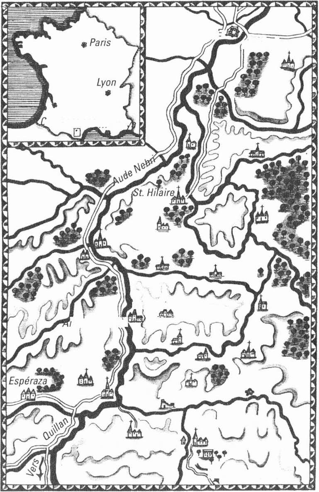
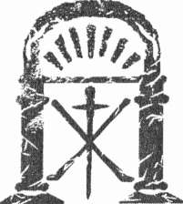
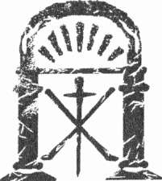
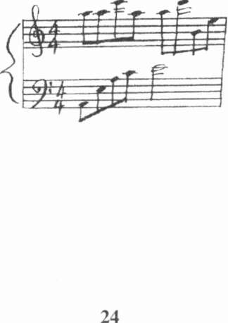
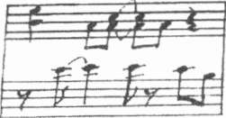
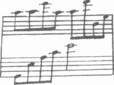
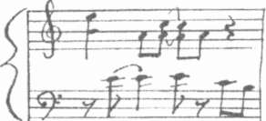
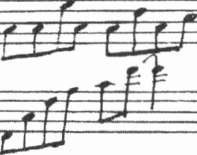
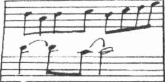

Kate
MOSSE
TAPINAK
TÜRKÇESÎ
F Ü S U N D O R U K E R
Harika annem Barbara Mosse'a ilk piyanom için...
Ve her zaman olduğu gibi, geçmiş, bugün ve gelecekteki her şey için sevgili Greg'e...

CARCASSONNı
V^TaCİtâ
Bordeaux
•arcassonneMarsji,
Limoux
t ; ı p
'ef Kaplıcalar]
Montazels.
Arques
Couiza
Coustaussa
Rennes-les-Bains
<p Rennes-le Château,
Domaine de la Cada
V Vers
L
Sougraigne
İÇİNDEKİLER
Giriş • 11
Birinci Bölüm • 17
İkinci Bölüm ® 69
Üçüncü Bölüm © 125
Dördüncü Bölüm a 181
Beşinci Bölüm 9 219
Altıncı Bölüm ® 289
Yedinci Bölüm m 333
Sekizinci Bölüm • 407
Dokuzuncu Bölüm 9 441
Onuncu Bölüm • 519
On Birinci Bölüm 9 545
On İkinci Bölüm 9 605
Son Söz 9 629
Nota ® 638
Yazarın Notu 9 641
Teşekkür ® 642
S E P U L T U R E
Si par une nuit loıırde et sombre
Eğer karanlık, kasvetli bir gecede
Un bon chretien, par charite
İyiliksever bir Hıristiyan,
Derriere quelque vieııx decombre
Sizin övgüye layık cesedinizi
Enterre votre corps vante,
Antik kalıntılar ardına gömerse...
Al'beure ou les chastes etoiles
İffetli yıldızların gözleri
Ferment leurs yeux appesantis,
Ağır kapaklarının kapanmasına izin
L'araignee y fera ses toiles,
verir.
Et la vipere ses petits;
Örümcek ağlarını orada örer;
Yılan yumurtalarını oraya bırakır.
Vous entendrez toute l'annee
Gelip geçen mevsimler boyunca
Sur vur votre tete condamnee
Lanetli kafanızda
Les cris lamentables des loups
Uğursuz haykırışları yankılanır.
Et des sorcieres fameliques,
Kurtların ve sıska cadıların,
Les ebats des vieillards lubriqııes
İhtiyar çapkınların
Et les complots des noirs filous.
Ve işbirlikçilerin kirli entrikalarının...
CHARLES BAUDELAIRE, 1857
8
L'âme d'cıutrui est une foret obscure oü il faııt marcher avec precaution.
Bir başkasının ruhu, insanın çok dikkatli yürümesi gereken karanlık bir ormandır.
Mektup, 1891
Claude Debussy
Gerçek tarot, simgeseldir; başka bir dil konuşmaz ve başka işaretler vermez.
The Pictorial Key to the Tarot, 1910
Arthur Edvvard Waite

GİRİŞ
Mart 1891
2 5 M A R T I 8 9 I Ç A R Ş A M B A
Bu öykü bir kemikler kentinde, ölümün daracık sokaklarında başlıyor.
Mezarların, taş meleklerin yer aldığı ve daha bedenleri mezarlarında soğumadan önce unutulmuşların hayaletlerinin dolaştığı; Paris'in Montmartre Mezarlığı'nın sessiz bulvarlarında, yürüyüş yollarında ve çıkmaz sokaklarında geçiyor.
Bu öykü, kapıdaki gözleyiciler ve bir başkasının kaybından kâr etmek için buraya gelmiş olan Paris'in yoksullarıyla başlıyor. Dik dik bakan dilenciler, keskin gözlü eskiciler, çelenk üreticileri, eski adak biblosu satıcıları, kâğıt çiçek yapan genç kızlar, siyah tenteleri ve kirli camlarıyla bekleyen arabalarla devam ediyor.
Öykü bir defin oyunuyla başlıyor. Le Figaro gazetesinde çıkan küçük bir ilan; yeri, günü ve saati bildirdiği halde çok az kişi gelmişti. Koyu renk tül peçeleri, jaketatayları,<*> cilalı çizmeleri ve mart yağmurundan korunmak için gösterişli şemsiyeleriyle küçük bir grup vardı.
Açık mezarın kenarında ağabeyi ve annesiyle birlikte duran Leonie'nin göz alıcı yüz hatlarını siyah tül gizliyordu. Rahibin dudaklarından dökü-
len günahların bağışlanmasını isteyen obosit sözleri, Leonie'yle birlikte oradaki herkesin yüreklerini, duygularını harekete geçirememişti. Rahip, kolasız beyaz kravatı, ucuz tokalı ayakkabıları ve yağlı cildiyle Paris'in kuzey kesimindeki On Sekizinci Bölge'de bulunan bu toprak parçacığına kadar gelmiş olan yalanları ve aldatma öykülerini elbette bilmiyordu.
(*) Arkası yırtmaçlı, etekleri uzun ve ön köşeleri yuvarlakça kesilmiş olan resmi ceket.
13
Kate M o s s e
Leonie'nin gözleri kupkuruydu. Tıpkı rahip gibi o da bu yağmurlu öğleden sonrasında oynanan oyunların farkında değildi. Bir cenazeye, kısa sona ermiş bir yaşamın bitiş noktasına katılmak üzere buraya geldiğini düşünüyordu. Şimdiye dek hiç karşılaşmadığı bir insana, ağabeyinin sev-gilisine son görevini yapıp, saygısını göstermek için buradaydı. Kederli ağabeyine destek olmak amacındaydı.
Leonie'nin gözleri; solucanların, örümceklerin yaşadığı nemli topra-
ğa indirilmekte olan tabuta dikildi. Oysaki ani bir hareketle başını çevirip, çok sevdiği ağabeyi Anatole'e baksaydı; yüzündeki ifadeyi fark edip çok şaşırabilirdi. Çünkü, genç adamın yüzünde bir kaybın üzüntüsü yerine bir rahatlama vardı.
Üstelik Leonie başını hiç oynatmadığı için mezarlığın uzak köşesindeki servi ağacının altında yağmurdan korunmaya çalışan gri silindir şapkalı, redingotlu adamı da fark etmiyordu. Herhangi bir Parisli güzel kızın saçını düzeltip, tülün altından gözlerini kaldırıp ilgiyle bakacağı türden bir erkeğe benziyordu. Özenle dikilmiş deri eldivenlerin içindeki iri, güçlü elleri, maun bastonun gümüş tepeliğinde duruyordu. Bu eller bir genç kızın belini kavramak, sevgilisini kendine çekmek, solgun bir yanağı okşamak için yaratılmış gibiydi.
Yüzünde gergin bir ifadeyle etrafa bakarken, parlak mavi gözlerinin içindeki gözbebekleri kara iğne delikleri gibi parlıyordu.
Tabutun kapağına inen toprağın boğuk sesi ve rahibin son sözleri kasvetli havada yankılanıyordu.
"Baba, Oğul ve Kutsal Ruh adına... Âmin."
Rahip son kez haç çıkarıp, sonra da gitti.
Âmin. Demek böyle.
Leonie daha bu sabah Monceau Parkından koparılmış hatıra gülünü elinden bıraktı. Siyah eldivenli parmaklarının arasından kayan beyaz gül, soğuk havada usul usul dönerek aşağıya düştü.
Bırakın ölüler rahat olsun. Bırakın ölüler uyusun.
Yağmur şiddetini artırırken mezarlığın yüksek oyma demir kapıları-
nın ötesinde; Paris'in çatıları, kuleleri ve kubbeleri, gümüş bir sise gömül-14
Tapınak
müştü. Sis; Clichy Bulvarfndan gelen fayton gürültülerini ve Saint-Lazare Garından yola çıkan trenlerin tiz çığlıklarını bastırıyordu.
Cenaze törenine katılanlar mezarlıktan ayrılmaya başladılar. Leonie, ağabeyinin koluna dokunurken, Anatole usulca elini okşayıp başını eğdi.
Birlikte mezarlıktan çıkarlarken Leonie artık bunun bir son olmasını diliyordu. İşkence ve acıyla geçen birkaç kasvetli ayın ardından belki her şeyi artık geride bırakabileceklerdi.
Gölgelerden sıyrılıp belki yeniden yaşama dönebilirlerdi.
Ama şimdi Paris'in birkaç yüz kilometre güneyinde bir şeyler kıpır-dıyordu.
Bir tepki, bir bağlantı, bir sonuç... Gözde kaplıca kasabası Rennes-les-Bains'in1"» üzerindeki çok eskilerden kalma kayın ormanlarında hafif bir esinti, yaprakları kımıldatıyordu. Uzaktan bir müzik sesi geliyor, ama tam olarak anlaşılmıyordu.
Son.
Nihayet sözcükler rüzgârla dağılıyor ve Paris'teki bu mezarlıkta masum bir kızın bir hareketiyle taş tapınağın içinde bir şeyler harekete geçiyordu.
Domaine de la Cade'ın çoktan unutulmuş, otlar bürümüş patikalarında bir şey uyanıyordu. Öylesine bakan biri bunu, akşamüstü solgunluğunda bir ışık oyunu sanabilir; ama kısacık bir an için olsa bile alçı heykellerin soluk alıp, hareket ettiğini, içini çektiğini sanabilirdi.
Ve nehrin kuru yatağında, toprağın ve taşların altına gömülü kartların üzerindeki portreler bir an için sanki canlanıyordu. Uçup giden şekiller, izlenimler, renklerden fazlası yoktu aslında. Bir öneri, bir yanılsama, bir vaat... Taş basamağın dönüş yerinde havanın bir hareketi ve ışığın kırılması. Mekân ile zaman arasındaki kaçınılmaz ilişki.
Aslında bu öykü, Paris'in bir mezarlığındaki kemiklerle değil; bir iskambil destesiyle başlıyor.
Şeytanın resim albümü.
(*) R e n n e s Kaplıcaları
15

BİRİNCİ BÖLÜM
Paris
Eylül 1891
1
PARIS,
16 EYLÜL I 8 9 I Ç A R Ş A M B A
Leonie Vernier, küçük gece çantasını sımsıkı tutmuş, sabırsızca aya-
ğını yere vurarak Garnier Sarayının merdiveninde bekliyordu.
Nerede kaldı bu adam?
Alacakaranlık Opara Meydam'nı ipeksi mavi bir ışığa boğmuştu.
Leonie kaşlarını çattı. Sinirinden köpürüyordu. Neredeyse bir saattir, kararlaştırdıkları gibi operanın çatısını süsleyen bronz heykellerin ruhsuz bakışları altında ağabeyini bekliyordu. Gelen geçenlerin küstah bakışla-rına tahammül etmek zorunda kalmıştı. Atlı arabaları, yolcularını indiren tenteleri yüksek özel faytonları, hava koşullarına açık kamu taşıtlarını, dört tekerleklileri, tek atlı arabaları izlemekten sıkılmıştı. Siyah ipek silindir şapkalar ve Maison Leoty ya da Charles Worth modaevlerinden çıkma gece elbiseleri sürekli yanından geçip gidiyordu. Görmek ve görülmek isteyenlerin oluşturduğu son derece zarif bir gala gecesi seyircisi operaya giriyordu.
Ama Anatole görünürde yoktu.
Bir an Leonie, onu görür gibi oldu. Tıpkı ağabeyi gibi uzun boylu, geniş omuzlu, ölçülü adımlarla yürüyen bir beyefendi ileride duruyordu.
Uzaktan bakarken ağabeyinin ışıltılı kahverengi gözlerini, düzgün siyah 19
Kate Mosse
bıyığını gördüğünü sanmış ve el sallamayı düşünmüştü. Ama adam başını çevirince başkası olduğunu fark etmişti.
Leonie gözlerini Opera Caddesi'ne çevirdi. Kırılgan bir monarşiden kalma ürkek bir kralın gece eğlencelerine güvenli bir yoldan gitmesi için açılan cadde, Louvre Sarayı'na kadar uzanıyordu. Sokak fenerleri alacakaranlıkta parlıyor, kafelerin ve barların pencerelerinden sıcak sarı ışıklar yola vuruyordu. Gaz lambalarının alevleri titreyip cızırdıyordu.
Gün geceye dönerken hava bir kentin akşamüstü gürültüsüyle doluyordu. Entre chierı et loııp (gün batarken)... Kalabalık sokaklarda tekerlek ve koşum takımlarının sesleri yankılanırken, Capucines Bulvarı'ndaki ağaçlardan kuşların cıvıltıları geliyordu. Seyyar satıcıların ve seyislerin kaba haykırışlarıyla operanın merdiveninde kâğıt çiçekler satan kızların tatlı sesleri, bir kuruş karşılığında beyefendilerin ayakkabılarını parlatma-ya hazır çocukların tiz çığlıklarına karışıyordu.
Haussmann Bulvarı'na giden bir otobüs, Leonie ile Garnier Sarayı'nın görkemli cephesi arasından geçerken üst katta biletleri toplayan biletçinin ıslık sesleri duyuluyordu. Göğsüne bir Tonquin madalyası iliştirilmiş sarhoş bir ihtiyar asker, askeri bir marş söyleyerek sağa sola salınıyordu. Hatta Leonie, bir ara altın payetlerle süslü kostümü, siyah maskeli fötr şapkası altında beyaza boyanmış yüzüyle dolaşan bir palyaço bile gördü.
Beni burada nasıl bu kadar bekletebilir?
Akşam çanları çalmaya başlayıp sokak taşlarında yankılanan gü-
rültülü seslere karıştı. Çan sesleri Saint-Gervais'den mi, yoksa yakındaki başka bir kiliseden mi geliyordu?
Leonie belli belirsiz omzunu silkti. Gözleri önce düş kırıklığı, ardından neşeyle parladı.
Daha fazla bekleyemezdi. Eğer Mösyö Wagner'in Lohengrin operasını izlemek istiyorsa, tüm cesaretini toplayıp içeriye yalnız başına girmesi gerekiyordu.
Girebilir miydi?
Gerçi yanında kavalyesi yoktu, ama neyse ki biletini yanına almıştı.
Cesaret edebilir miydi?
20
Tapınak
Tereddüt ederek, biraz düşündü. Paris galası yapılıyordu ve Anatole geciktiği için böyle bir geceye gidemeyecek miydi?
Opera binasının içinde kristal avizeler ışıldarken, böylesine parlak ve zarif bir geceyi kaçırmaması gerektiğini anladı.
Leonie kararını vermişti. Merdivenden yukarı koştu, cam kapılardan geçip kalabalığa karıştı.
Perdenin açılmasına iki dakika kaldığını bildiren zil sesi duyuldu.
Büyük, koşar adımlarla geçerken bir an için jüpoııuyla ipek çorapları göründü; aynı ölçüde beğeni ve hayranlık dolu gözlerle izlendi. On yedi yaşındaki Leonie artık çocuk değildi, güzel bir kadın olma yolundaydı, ama yine de çocuksu görüntüsünü tümüyle yitirmemişti. Ressam Mösyö Moreau ve Rafael öncesi dönemi dostlarının gözdesi olan nostaljik cilt rengine ve günün modası yüz hatlarına sahip olduğundan şanslı sayılırdı.
Ama Leonie'nin bu görüntüsü aldatıcıydı; uysal değil azimli, alçakgö-
nüllü değil cesur, çekingen bir ortaçağ kadını değil çağdaş tutkulara sahip bir kızdı. Anatole, ona Rossetti'nin La Damoiselle Elııe (Mutlu Genç Kız) adlı şiirini çağrıştırdığını söyleyerek takılırken, Leonie aslında şiirdeki kıza tıpatıp benzediğinin farkındaydı. Hayalet kopyası olabilirdi, ama yine de o değildi. Leonie, dört elementten su, toprak ya da hava değil, ateşti.
Beyaz mermeri andıran yanakları kızarmış, bakır renkli bukleleri çıplak omuzlarına dökülmüştü. Upuzun kumral kirpiklerin çevrelediği ışıltılı yeşil gözleri öfke ve cesaretle parlıyordu.
Ama geç kalmayacağına söz vermişti.
Elinde, sanki bir kalkanmış gibi tuttuğu el çantası, diğerinde yeşil ipek tuvaletinin eteğiyle Leonie, mermer zeminde hızla ilerlerken daha ağırbaşlı kadınların eleştiren bakışlarına hiç aldırış etmedi. Gülkurusu mermer sütunlar, altın yaldızlı heykeller ve kornişler arasından görkemli merdivene doğru koşup, hızla basamakları tırmandı; etek ucundaki yapay incilerle gümüş boncuklar ise basamaklara çarpıyordu. Sımsıkı saran korsesinin içinde soluk soluğa kalmıştı ve kalbi çok hızlı ayarlanmış bir metronom gibi çarpıyordu.
21
Kate Mosse
Yine de Leonie hiç yavaşlamadı. Biraz ileride görevlilerin Büyük Salon'un kapılarını kapatmak üzere harekete geçtiklerini fark edince son bir enerji patlamasıyla kendini giriş kapısına attı.
Biletini yer göstericiye uzatarak, "İşte biletim, ağabeyim de birazdan gelecek," dedi.
Adam kenara çekilerek geçmesine izin verdi.
Seslerin yankılandığı Büyük Fuaye'nin mermer girinti ve çıkıntıla-rından sonra salon çok sessizdi. Kalın halılar ve kırmızı kadife kaplı koltuklar; fısıltıları, selamlaşmaları, sağlık ve aileler hakkındaki konuşmaları adeta yutuyordu.
Orkestranın yerleştiği çukur bölümden nefesli sazların tanıdık gamları, arpejleri ve notalar tıpkı bir sonbahar dumanı gibi yükseliyordu.
Başardım.
Leonie kendini toplayıp, giysisini düzeltti. La Samaritaine modaevin-den daha bugün gelmiş olan yepyeni tuvalet hiç giyilmemişliğin sertliğini taşıyordu. Uzun yeşil eldivenlerini dirseklerinin üzerine kadar çekip teni-nin bir kısmının görünmesine izin vererek sahneye doğru yürüdü.
Anatole'ün besteci bir arkadaşı ve komşusu Achille Debussy sayesinde koltukları ön sıranın tam ortasındaydı. Yanlarından geçerken sağında ve solunda siyah silindir şapkalar, tüylerle süslü başlıklar ve payetli yelpazeler gözüne ilişti. Beyaz saçlı, kızarmış ve morarmış yüzleriyle aşırı pudralı dul kadınlar dikkatini çekti. Hafifçe başını eğip içten bir gülümsemeyle herkesi selamlayarak geçti.
Havada garip bir gerginlik vardı.
Leonie daha dikkatli bakmaya başladı. Büyük Salon'da ilerledikçe bir terslik olduğu duygusu biraz daha güçlendi. İnsanların yüzlerinde tuhaf bir tedirginlik vardı; sanki alttan bir şeyler kaynıyor, etrafa sıkıntılı bir bekleyiş yayılıyordu.
Ensesinde bir karıncalanma hissetti. İzleyiciler adeta diken üstünde oturuyorlardı. Kaçamak bakışlardan, güvensiz yüz ifadelerinden bu açıkça okunuyordu.
Saçmalama.
22
Tapınak
Anatole'ün bir akşam yemeğinde, Prusyalı sanatçıların eserlerinin Paris'te sergilenmesinin bir grup tarafından protesto edildiğini anlatan gazete haberini okuduğunu anımsadı, ama burası Garnier Sarayı idi; Clichy ya da Montmartre'ın kuytu bir çıkmaz sokağı değildi.
Operada neler olabilir ki?
Leonie oturanların etekleriyle dizleri arasından zorlukla geçip koltu-
ğuna yerleşti ve derin bir soluk aldı. Toparlandıktan sonra, etrafındakilere baktı. Sağ tarafında mücevherlerle bezenmiş orta yaşlı bir kadın ve sulan-mış gözleri gür beyaz kaşlarıyla gölgelenmiş kocası oturuyordu. Erkeğin koyu renk lekeli elleri, gümüş sapının tam altında yazılı bir bant bulunan bastonun üstüne yerleşmişti. Sağ tarafında, Anatole'ün bir tarla hendeği gibi boş duran koltuğundan sonra orta yaşlı, çatık kaşlı, asık suratlı, sakallı dört erkek oturuyordu. Hepsinin elleri sıradan şimşir ağacı bastonlarının üzerindeydi. Oldukça dikkatli gözlerle sahneyi izliyorlardı. Oturuşlarında ise tedirgin edici bir hava vardı.
Hepsinin bu sıcak ortamda deri eldiven giymesi, Leonie'nin dikkatinden kaçmadı. İçlerinden biri dönüp ona bakınca, Leonie yanakları kızararak, gözlerini karşıya, üst kemerden ahşap sahneye inen görkemli perdelerin kırmızı ve altın sarısı kıvrımlarına dikti.
Geç kalmamış olabilir miydi? Ya başına kötü bir şey geldiyse?
Aniden beliriveren bu sevimsiz fikri aklından çıkarmak istercesine başını salladı.
Çantasından yelpazesini çıkarıp, sert bir el hareketiyle açtı. Ağabeyi için ne kadar bahane ararsa arasın, büyük ihtimalle kötü bir zamanlama dışında bir şey olmamıştı.
Son günlerde sık sık yaşandığı gibi.
Montmartre Mezarlığındaki kasvetli olaydan bu yana Anatole gitgide biraz daha güvenilmez oluyordu. Bir kez daha o gün zihninde canlanırken Leonie'nin kaşları çatıldı. O günü bir türlü unutamıyor, her defasında tekrar tekrar yaşıyordu.
Mart ayında her şeyin biteceğini ummuştu, ama ağabeyinin davranış-
ları hâlâ düzelmemişti. Günlerce ortadan yok oluyor; gecenin geç saatle-23

Kate Mosse
rinde eve geliyor; dostlarından, tanıdıklarından uzak duruyor ve kendini yalnızca işine veriyordu.
Ama bu gece geç kalmayacağına söz vermişti.
Orkestra şefi sahnede yerini alırken Leonie'nin düşünceleri dağıldı.
Ani ve şiddetli bir alkış patlaması tıpkı bir yaylım ateşi gibi salonu doldurdu. Genç kız, kaygılı ruh haline hiç de uymayan bir biçimde hevesle alkışlıyordu. Yan tarafındaki dört erkek hiç kıpırdamamış; ucuz, biçimsiz bastonlarını tutan elleri hareket etmemişti. Eğer müzikten keyif almaya-caklarsa neden geldiler diye merak etti. Bazen insanlar fazlasıyla saygısız olabiliyorlardı. Böylesine bir küstahlığı kabullenmezdi, bir an, keşke bu kadar yakın oturmasaydık, diye geçirdi aklından.
Orkestra şefi eğilerek seyircileri selamladı ve sahneye döndü.
Alkışlar sona erdikten sonra Büyük Salon'a sessizlik çöktü. Orkestra şefi batonunu ahşap kürsüye vurunca, salonun mavi gaz lambaları titreyerek loşlaştı. Herkes bir beklentiyle sahneye, orkestra şefine bakıyordu.
Orkestra üyeleri sırtlarını dikleştirdi, kimi arşelerini, kimi nefesli sazlarını kaldırdı.
Şef, batonunu havaya kaldırdı. Mösyö Wagner'in Lohengrin operasının açılış notaları Garnier Sarayı'nın görkemli salonunu doldururken Leonie soluğunu tutmuştu.
Yanındaki koltuk hâlâ boştu.
2
OO
Müzikle birlikte üst balkonlardan da ıslıklar ve yuh.'-lamalar yükselmeye başladı. Seyircilerin büyük bir bölümü ilkönce bu gürültülere hiç aldırış etmeden sanki çok olağan bir durummuş gibi davrandı. Ama sesler gittikçe yükselerek daha rahatsız edici bir hal aldı. Artık balkondan ve ön koltuklardan da sesler duyuluyordu.
Leonie protestocuların ne söylediklerini tam olarak anlayamıvordu.
Gözlerini orkestraya çevirerek, fısıltıları, ıslıkları duymazlıktan gelmeye çalıştı, ama uvertür çalarken, sinsi ve belirsiz bir huzursuzluk yukarıdan aşağıya, sağdan sola tüm salonu sarıyordu. Daha fazla dayanamayıp yan koltukta oturanlara doğru eğildi.
"Kim bunlar?" diye fısıldadı.
Yaşlı kadın soruyu duyunca kaşlarını çattı ama yine de yanıtladı.
Yelpazesinin ardına gizlenerek, "Kendilerine Abonnes adını veriyor-lar," dedi. "Fransız bestecileri dışında hiç kimsenin eserlerinin çalınmasını istemiyorlar. Kendilerini müzik milliyetçileri olarak tanımlıyorlar. İlkeleri bakımından onlara biraz yakınlık duyuyorum ama tepkilerini böyle gös-termemeleri gerekir."
Leonie başını sallayarak teşekkür etti ve koltuğuna yaslandı. Huzursuzluk gitgide büyüyordu, ancak yaşlı kadının serinkanlı yaklaşımı ona güven vermişti.
Uvertürün son notaları duyulurken protestonun şekli değişti. Perde yükselip, Anvers'teki eski bir nehrin kıyısında duran onuncu yüzyıl Töton 25
Kate Mosse
şövalyeleri korosu ortaya çıkınca birinci balkondan daha şiddetli sesler duyuldu. Sekiz dokuz erkek ayağa fırlayıp ıslık çalmaya, yuhalamaya, ağır tempoyla alkışlamaya başladılar. Ön ve üst sıralarda bir hoşnutsuzluk dalgası dolaşıyor, ama diğer itiraz patlamaları arasında yok oluyordu. Protestocuların sözleri daha rahat duyulmaya başlanınca, gittikçe yükselen gürültü arasında sözler açıkça anlaşılıyordu.
"Boche! Boche/"<*>
Artık protestocuların sesleri sahnedekilere kadar ulaşıyordu. Koro ile diğer sanatçılar arasındaki kaçamak bakışlar, yüzlerindeki korku ve kararsızlık ifadesi Leonie'nin dikkatinden kaçmamıştı.
"Boche! Boche! Boche!"
Gösterinin kesilmesini istemiyordu ama bu durumun heyecan verici olduğunun da farkındaydı. Olağan koşullar altında yalnızca, Anatole'ün okuduğu Le Figaro gazetesinin haberlerinden duyabileceği bir olayı yaşı-
yordu.
İşin doğrusu Leonie günlük yaşamının kısıtlamalarından, uzak akrabaların, babasının eski dostlarının iç karartıcı evlerine yapılan sıkıcı ziyaretlerde annesine eşlik etmekten bıkmıştı. Annesinin yeni arkadaşı olan ve kendisine sanki hâlâ kısacık eteklerle gezen küçük bir kız çocuğuymuş
gibi davranan o eski askerle sohbet etmek de canını sıkmaya başlamıştı.
Anatole'e anlatacağım öyküye bir bakın.
Ama protesto gösterisinin havası değişiyordu.
Sanatçılar, ağır sahne makyajının altında solmuş yüzleriyle sahnede şarkı söylemeyi sürdürüyorlardı. Daha doğrusu ilk şişe sahneye atılıncaya kadar şaşırmamışlardı; şişe Kral Heinrich rolündeki bas şarkıcının tam yanından geçmişti.
Bir an için sanki orkestra susmuş; öylesine derin ve boşlukta kalan bir sessizlik salona dolmuştu. Şişe ağır çekimdeymiş gibi sert beyaz sahne ışıklarında yeşil pırıltılar saçarak uçarken, seyircilerin tümü soluğunu tutmuştu. Şişe boğuk bir sesle branda bezinden dekora çarpıp orkestra çukuruna yuvarlandı.
(*) F r a n s a ^ a . A l m a n l a r ı aşağılamak için kullanılan tanım.
26
Tapınak
Bir anda her şey eski haline döndü. Sahnede ve salonda kıyamet kop-ili. Gürültüler gittikçe arttı. Ardından ikinci şişe izleyicilerin üzerinden uçup sahneye düştü. Kan, çürük meyve ve pis sokak kokulan ön koltuklara yayılırken, orada oturan kadınlardan biri çığlık atıp, eliyle ağzını kapadı.
"Boche! Boche! Boche!"
Leonie'nin yüzündeki gülümseme yerini korkuya bırakmıştı. Midesinde kelebekler kanat çırpıyordu. Artık macera olmaktan çıkmış, çirkin, korkutucu bir hal almıştı. Midesi bulanıyordu. Sol tarafında oturan dört erkek aniden tek vücut gibi ayağa fırladı; tempoyla el çırpıp domuz, inek ve keçi seslerine benzer seslerle ortalığı inletmeye başladı. Söyledikleri Prusya karşıtı nakarat salonun her yanına yayılırken adamların yüz ifadeleri acımasızdı.
"Tanrı aşkına otur yerine be adam!"
Gür sakallı, gözlüklü beyefendinin soluk yüzü zamanını mürekkep hokkaları, balmumu mühürler ve belgeler arasında geçirdiğini gösteriyordu. Elindeki konser programıyla protestoculardan birinin sırtına vurdu.
"Gerçekten," dedi yanındaki arkadaşı. "Otursana!"
Protestocu arkasını dönüp, bastonunu son hızla adamın parmaklarına indirince, Leonie soluksuz kaldı. Misillemenin hızı ve şiddetiyle şaşkı-
na dönen adam haykırdı ve elindeki program yere düştü. Yarasından kan fışkırmaya başlayınca arkadaşı ayağa fırladı. Protestocunun bastonunu elinden kapmaya çabalarken, özellikle topuzuna yerleştirilmiş bir çivi dikkatini çekti, ama sert eller onu geriye itince yere düştü.
Orkestra şefi müziğe devam etmeye çalışıyordu; ama çevrelerini korkulu bakışlarla süzerken tempoyu kaçırdılar. Anlaşılan tüm bunlar olurken sahne arkasında bir karar alınmıştı. Siyah giysili, gömlek kollan dirseklerine kadar sıvanmış sahne görevlileri bir anda sahneye doluşup sanatçıları ateş hattından uzaklaştırdılar.
Yöneticiler perdeyi indirirken, çok hızlı çekildiğinden karşı ağırlıklar yükselirken tehlikeli bir biçimde birbirine çarptılar. Ağır perde önce havada sallandı ve dekorun bir parçasına takılıp yanda kaldı.
27
Kate Mosse
Gürültüler daha da şiddetlendi.
Önce locadakiler kaçmaya başladılar. Tüyler ve altın bezeli ipek giysiler içindeki burjuvazi, aceleyle çıkış kapılarına yöneliyordu. Onları görünce salondan ayrılma isteği milliyetçi protestocuların çoğunun bulunduğu üst katlara, ardından balkonlara ve ön koltuklara yayıldı. Leonie'nin arkasındaki sıralar da birer birer boşalıyordu. Büyük Salon'un her köşesinden, ka-panan koltukların tıkırtısı duyuluyor, çıkış kapılarının ağır kadife perdeleri sertçe kenara çekilirken pirinç halkalar takırdıyordu.
Ama protestocular gösteriyi durdurma amacına henüz ulaşamamış-
lardı. Sahneye; şişeler, taşlar, tuğlalar, çürük meyveler fırlatmaya devam ettiler. Orkestra elemanları değerli notalarını ve çalgılarını alıp, iskemlelerin, ahşap nota ayaklıklarının oluşturduğu engellerin arasından sahnenin altına doğru kaçmaya başladılar.
Sonunda perdenin arasından görünen tiyatro binasının yöneticisi sü-
kûnet çağrısında bulundu. Adam ter içindeydi ve gri bir mendille yüzünü siliyordu.
"Hanımefendiler, beyefendiler, lütfen sakin olun. Lütfen!"
İri yapılı bir adamdı, ama ne sesinden, ne de duruşundan otorite sezili-yordu. Şiddetlenen kargaşaya bir düzen getirebilmek için çabalarken, sürekli kollarım sallayan adamın gözlerindeki korku dolu bakışı fark etti Leonie.
Pek yararı olmadı, çok geç kalmıştı.
Bu kez bir şişe yerine üzerine çiviler çakılmış bir tahta parçası sahneye doğru uçtu ve yöneticinin gözünün üstüne çarptı. Adam eliyle yüzünü kapatıp geriye doğru sendeledi. Parmaklarının arasından kan fışkırırken, yere düştü ve bir bez bebek gibi sahneye yığıldı.
Bu görüntü Leonie'nin cesaretini tümüyle kırmıştı.
Buradan çıkmalıyım.
Korku ve dehşet içinde çevresine amaçsızca bakarken etrafındaki kalabalık ile önündeki kargaşanın arasına sıkıştığını fark etti. Sıraların üs-tünden atlayarak kaçabileceğini düşünüp koltukların sırtına tutundu, ama giysisinin boncuklarla süslü eteği kendi koltuğunun altındaki cıvatalara 28
Tapınak
takılmıştı. Umudunu iyice yitiren Leonie, eğilip, titreyen parmaklarıyla eteğini kurtarmaya çabaladı.
Şimdi salonu yeni bir protesto haykırışı dolduruyordu.
"Kahrolsun!"
Başını kaldırıp baktı.
Şimdi ne olacak? Haykırış salonun her köşesine yayılmış gibiydi.
"Kahrolsun! Hücum!"
Bir şatoyu saran haçlı askerleri gibi protestocular bastonlarını, sopalarını sallayarak ilerliyorlardı. O sırada bir bıçağın pırıltısı göze çarpınca Leonie ani bir korku dalgasıyla titredi. Evet, protestocular sahneye saldı-
racaklardı ve Leonie de tam yollarının üzerindeydi. Salonda Paris sosyete-sinin maskesinden geriye ne kalmışsa çatlayıp yarıldı ve paramparça oldu.
Kapana kısılanları histeri dalgası sararken, kaçmak isteyen avukatlar, gazeteciler, ressamlar, düşünürler, bankacılar, kamu görevlileri, kibar fa-hişeler, evli kadınlar umutsuzca kapılara doğru atılıyorlardı.
Herkes kendini kurtarsın.
Milliyetçiler sahneye yaklaşırken, bir ordu disipliniyle koltukların, korkulukların üzerinden atlıyor, orkestra çukurunu dolduruyor, sahneye tırmanıyorlardı. Leonie giysisini tüm gücüyle çekiştirdi ve kumaşı yırta-rak nihayet kendini kurtarmayı başardı.
"Almanlar! Alsace Fransız'dır! Lorraine Fransız'dır!"
Protestocular sahne gerisindeki perdeyi yırtıp dekorları tekmelemeye başladılar. On dokuzuncu yüzyılın saldırganları, onuncu yüzyılın yapma ağaçlarını, nehrini, kayalarını, taşlarını ve hayal ürünü askerlerini paramparça ettiler. Lohengrirı dünyası savaşa yenik düşerken; sahne kırık tahtalar, yırtık perdeler ve tozla dolmuştu.
Sonunda milliyetçilere karşı direniş gösterenler ortaya çıktı. Bir grup idealist genç erkekle eski gösterilerden deneyim kazanmış olanlar nasıl olduysa birleştiler ve milliyetçileri sahneye doğru kovaladılar. Salonu binanın arkasından ayıran kapı kırılınca, kulise girip dekorların arasından ilerlediler ve Prusya karşıtı göstericileri püskürtmeye çalışan sahne görev-lileriyle birleştiler.
29
Kate Mosse
Korkudan yerinden kıpırdayamayan Leonie olup biteni dehşet içinde izliyordu. Henüz çocuk denecek yaşta, üzerine birkaç beden büyük gelen ödünç kıyafetiyle yakışıklı bir genç, kendini protestocuların elebaşısının üzerine attı. Kollarını adamın boynuna dolayıp onu yere indirmeye çalıştı, ama bir anda kendini yerde buldu. Çelik burunlu çizme midesine inince acıyla haykırdı.
"Çok yaşa Fransa! Kahrolsun!"
Kan tutkusu hepsini sarmıştı. Şiddet artarken Leonie, protestocuların gözlerinin heyecan ve öfkeyle büyüdüğünü fark etti. Yanakları kızarmış, ateş basmıştı.
Başka bir opera çalışanı da sahneden aşağıya atılınca Leonie geriledi.
Adamın bedeni terk edilmiş orkestra çukurunda takla atıp, pirinç korkulu-
ğa takıldı. Kolu ve omzu yerinden çıkmış, sarkıyordu. Gözleri açıktı.
Geri gitmelisin. Geri git.
Şimdi dünya kan, kırık kemik ve et içinde boğuluyor gibiydi. Çevresinde, erkeklerin yüzündeki nefret ifadesinden başka bir şey göremiyordu.
Donup kaldığı yerden bir buçuk metre kadar ötede paltosuyla ceketinin düğmeleri açılmış bir adam elleri ve dizleri üzerinde sürünüyordu. Sahnenin ahşap zemininde ilerlerken ardında kanlı el izleri bırakmıştı.
Sonra adamın tam arkasında bir silah havaya kalktı.
Hayır!
Leonie uyarmak için bağırmak istedi, ama yaşadığı şok yüzünden sesi çıkmıyordu. Silah aşağıya inip, adama dokundu. Ayağı kayan adam yan tarafına yattı. Saldırgana bakıp bıçağı görünce kendini korumak için elini kaldırdı, ama bıçak bedeniyle buluştu. Bıçak çekilip tekrar göğsüne saplanırken adam acıyla haykırıyordu.
Adamın bedeni Champs-Elysees Bulvarı'nda bulunan kulübedeki kukla gibi sarsıldı ve kollan, bacakları sallanarak, bir anda hareketsizleşti.
Leonie, ağladığını fark edince şaşkınlığa düştü. Ardından şimdiye dek tanımadığı bir korku dalgası ruhunu sardı.
"Lütfen, geçmeme izin verin," diye haykırdı.
30
Tapınak
Omuzlarıyla itip yol açmak istedi ama bunu başaramayacak kadar ufak tefek ve zayıftı. Çıkış kapısıyla arasında bir insan kalabalığı vardı.
Koltukların arasındaki yol, kan kırmızısı minderlerle kaplanmıştı. Sahnenin altında gaz lambaları, yere saçılmış notaların üzerine kıvılcımlar saçıyordu. Ahşap sahne yanmaya başlarken, turuncu, sarı renkler bir anda yerini kızıl alevlere bıraktı.
"Yangın! Yangın!"
Böylece salonu başka bir panik dalgası sardı. Beş yıl önce Opera Comique binasındaki yangın, salonu cehenneme çevirip seksen kişinin ölümüne yol açmıştı.
"Bırakın geçeyim!" diye bağırdı Leonie. "Yalvarıyorum."
Kimse onu duymuyordu. Yer; programlar, tüylü başlıklar, opera dür-bünleriyle kaplanmıştı. Eski bir tapınaktaki kuru kemikler gibi hepsi ayaklar altında kırılıyordu.
Önündeki insanların dirseklerinden ve enselerinden başka bir şey göre-meyen Leonie santim santim ilerlemeye, çatışmanın en yoğun olduğu yerden uzaklaşmaya çabalıyordu.
Tam yanındaki yaşlı kadının tökezleyip düşmekte olduğunu fark etti.
Ayaklar altında ezilecek.
Leonie elini uzatıp kadının dirseğini tutunca, kolalı kumaşın altında incecik, sıska kemikli bir kol olduğunu fark etti.
"Ben yalnızca müzik dinlemek istemiştim," diye ağlıyordu kadın.
"Fransız, Alman benim için hiç fark etmez. Günümüzde bu gibi şeyleri yaşamak... Bir kez daha tekrarlanmasını görmek..."
Yaşlı kadının ağırlığıyla sendeleyerek ilerlemeye devam ettiler. Her adımda taşıdığı yük biraz daha ağırlaşıyor gibiydi. Kadın neredeyse bayı-
lacaktı.
"Geldik artık," diye bağırdı Leonie. "Lütfen deneyin, lütfen." Yaşlı kadını ayakta tutmak için olanca gücüyle çabalıyordu. "Kapıya yaklaştık.
Neredeyse güvendeyiz."
Sonunda operanın tanıdık üniformalı görevlisi gözüne ilişti.
31

Kate Mosse
"Tanrı aşkına bana yardım edin. Buraya. Çabuk!" diye haykırdı.
Yer gösterici derhal harekete geçti. Tek kelime etmeden yaşlı kadını kucağına alıp Büyük Fuaye'ye çıkarırken genç kızı yükünden kurtardı.
Leonie'nin dizleri çözüldü, yorgunluktan bitmişti, ama kendini zorladı. Birkaç adım daha atmalıydı.
Birdenbire bileğine bir el yapıştı.
"Hayır!" diye haykırdı. "Hayır!"
Barikatlar, yangın ve kavgacı kalabalığın arasında kapana kıstırılmak istemiyordu. Körlemesine yumruğunu salladı ama boşa gitti.
"Dokunmayın bana!" diye bağırdı. "Bırakın beni!"
32
3
OO
"Leonie, benim. Leonie!"
Tanıdık ve güven verici bir erkek sesiydi. Ve yine tanıdık sandal ağacı saç yağı ve Türk tütünü kokusu.
Anatole mü? Burada mı?
Güçlü eller belinden kavrayarak onu kalabalığın arasından çekip çıkardı.
Leonie gözlerini açtı. "Anatole!" diye bağırarak kollarını boynuna doladı. "Neredeydin? Bunu nasıl yaparsın?" Kucaklayışı saldırıya döndü ve öfkeli yumruklarını göğsüne indirdi. "Uzun süre bekledim ama sen gelmedin. Beni nasıl yalnız başıma bırakıp..."
"Biliyorum," diye yanıtladı aceleyle. "Bana kızmaya hakkın var, ama şimdi sırası değil." Leonie'nin öfkesi geldiği gibi uçup gitti. Bitkinlikten başı ağabeyinin omzuna düştü.
"Ben gördüm."
"Biliyorum, petitep" dedi usulca saçlarını okşayarak. "Ama askerler geldi bile. Çatışmanın ortasında kalmamak için hemen burdan gitmeliyiz."
"Yüzleri nefret doluydu, Anatole. Her şeyi yakıp yıktılar. Sen gördün mü? Gördün mü?"
Leonie kapıldığı histeri dalgasının midesinden boğazına doğru yükseldiğini hissetti. "Çıplak elleriyle onlar..."
"Daha sonra anlatırsın!" dedi Anatole sertçe. "Şimdi buradan uzaklaşmalıyız. Gidelim."
(*) Küçüğüm
33
Kate Mosse
Leonie hemen kendini topladı. Derin bir soluk aldı.
"Akıllı kız," dedi Anatole, kararlı bakışlarının yeniden gözlerine yerleştiğini görünce. "Hadi çabuk!"
Anatole uzun boyunu ve güçlü bedenini kullanarak salondan kaçan kalabalığın arasında kendilerine yol açtı.
Kadife perdelerin arasından kargaşanın içine ilerliyorlardı. El ele balkonları geçip görkemli merdivenden aşağıya koştular. Şampanya şişeleri, ters dönmüş buzluklar ve programların saçıldığı mermer zemin ayaklarının altında tıpkı buz pisti gibi olmuştu. Kayıp sendelediler ama yere düşmeden cam kapılara geldiler ve Opera Meydanı'na çıktılar.
Aynı anda tam arkalarından kırılan cam sesleri geldi.
"Leonie, bu taraftan!"
Eğer Büyük Salon'da gördüğü manzara kötüyse, sokaklar daha berbat olmalıydı. Aborınes adını kullanan protestocular Garnier Sarayı'nın mer-divenlerini de ele geçirmişlerdi. Ellerinde sopalar, şişeler ve bıçaklarla üç sıra halinde şarkı söyleyerek duruyorlardı. Aşağıda Opera Meydam'nda kısa, kırmızı ceketli, altın rengi miğferli, diz çökmüş askerler tüfeklerini protestoculara doğrultmuş, ateş emrini bekliyorlardı.
"Ne kadar kalabalıklarmış!" diye bağırdı Leonie.
Anatole yanıt vermeden, onu Garnier Sarayı'nın barok cephesinin önündeki kalabalığın arasından geçirdi. Köşeye ulaşınca Scribe Sokağı'na dalıp ateş hattından uzaklaştılar. Birbirinden ayrılmamak için parmakları kenetlenmiş, hızla akan bir nehrin üzerindeki çöpler gibi kalabalığın arasında itiş kakış yürüyorlardı.
Leonie artık kendini güvende hissediyordu. Ne de olsa Anatole ya-nındaydı.
Sonra tek bir silah sesi duyuldu. Bir an için insan kalabalığı durakladı, sonra tekrar ilerlemeyi sürdürdü. Leonie ayakkabı bağlarının açıldığını, erkek çizmelerinin bileklerine çarptığını ve yırtık eteğini ezdiğini hissetti.
Dengesini yitirmemek için çabalıyordu. Arkalarından yaylım ateşi başla-mıştı. Tek sabit nokta Anatole'ün başıydı.
"Sakın beni bırakma," diye haykırdı.
Arka taraftan bir patlama sesi havada yankılanınca, kaldırım taşları sarsıldı. Dönüp bakan Leonie, Opera Meydanı'ndan mantara benzer gri bir 34
Tapınak
dumanın göğe doğru yükseldiğini gördü. Ardından ikinci patlama kaldı-
rımı tekrar sarstı. Hava sanki katılaşmış ve üzerine katlanmıştı.
"Toplar patlıyor!"
"Hayır hayır, bunlar tabanca."
Leonie bağırdı ve Anatole'ün elini biraz daha sıkı tuttu. Nereye doğru gittiklerini bilmeden, zaman kavramını yitirmiş; gürültü, kan ve tozları olabildiğince arkada bırakmaları gerektiğini söyleyen hayvansal bir içgü-
düyle hiç durmadan ilerlemeye çalışıyorlardı.
Kolları, bacakları iyice yorulmuştu ve kendini çok bitkin hissediyordu, ama adım atamayacak hale gelene dek koşmaktan vazgeçmedi.
Yavaş yavaş çevrelerindeki kalabalık seyreldi ve kendilerini çatışmadan, patlamalardan, tüfek namlularından uzakta, sakin bir sokakta buldular.
Bacakları yorgunluktan çözülmek üzereydi, gecenin serinliğinde tüm bedeni ıslanmış gibiydi.
Sonunda duraklayıp dengesini sağlamak için bir elini duvara dayadı.
Kalbi deliler gibi çarpıyor, nabzı kulaklarında çınlayarak atıyordu.
Anatole de durup duvara yaslandı. Leonie kendini bırakınca bakır rengi bukleleri, ipek iplikler gibi sırtının ortasına kadar indi, ağabeyinin koruyucu kollarının omzuna sarıldığını hissetti.
Soluklarını düzene sokmak için derin derin nefes aldı. Paris sokaklarının duman isiyle kirlenmiş eldivenlerini çıkarıp yere attı.
Anatole geniş alnından çıkık elmacıkkemiklerine kadar inmiş gür siyah saçlarını elleriyle geriye doğru düzeltti. Saatlerce eskrim salonlarında antrenman yapmasına karşın onun da soluklan düzensizdi.
Çok garip ama sanki gülümsüyor gibiydi.
Bir süre ikisi de konuşmadı. Yalnızca derin soluklarının sesi duyulurken, serin eylül havasına beyaz bulutlar üfler gibiydiler. Sonunda Leonie doğruldu.
"Niçin geç kaldın?" diye sorarken sanki son bir saatin olaylarını hiç yaşamamış gibiydi.
Anatole duyduklarına inanamayarak ona baktı, ardından kahkahalarla gülmeye başladı. Konuşmaya çabalarken de havayı boğuk kahkahalarla dolduruyordu.
35

Kate Mosse
"Böyle bir anda bile beni azarlıyor musun petitel"
Leonie, ona ters bir bakış attı ama dudaklarının bir gülüşle kıvrıldı-
ğını da hissetti. Kendini tutamadan gülmeye başladı ve kahkahalar tüm bedenini sardı. Gözyaşları, kirlenmiş güzel yanaklarından aşağıya süzü-
lüyordu.
Anatole ceketini çıkarıp kardeşinin çıplak omuzlarına sardı.
"Gerçekten de sen olağandışı bir yaratıksın," dedi genç adam. "Aslın-da olağanüstü!"
Kendi perişan görüntüsünü, Anatole'ün şık, zarif haliyle kıyaslayan Leonie'nin yüzünde acı bir gülümseme dolaştı. Lime lime olmuş yeşil tu-valetine baktı. Sökülen eteği, ardında bir duvağın ucu gibi uzanırken; cam boncukların bir kısmı kırılmış, bir kısmı da ipliklerinden sarkıyordu.
Paris sokaklarında paldır küldür koşuşturmalarına karşın Anatole, son derece kusursuz görünüyordu. Gömleğinin kolları beyaz ve ütülüydü, kolası bile bozulmamış yakası dimdik duruyor, mavi yeleğinde bir tek leke bile göze çarpmıyordu.
Bir adım geriye çekilip duvardaki tabeladan sokağın adını okudu.
"Caumartin Sokağı. Harika. Yemeğe ne dersin? Sanırım acıkmışsındır."
"Açlıktan ölüyorum."
"Biraz uzakta bir kafe biliyorum. Alt katı La Grande-Pinte kabaresi oyuncularının ve hayranlarının uğrak yeri. Ama üst katta son derece saygın özel odalar var. Sence uygun mu?"
"Mükemmel."
Anatole gülümsedi. "Öyleyse tamamdır. İlk kez seni uyku saatinden çok sonra eve götüreceğim." Sırıtarak devam etti. "Annemin seni bu durumda görmesini istemem. Beni asla affetmez."
36
4
OO
Marguerite Vernier, yanında General Georges Du Pont ile birlikte Cambon ile Sainte-Honore caddelerinin köşesinde faytondan indi.
Kavalyesi, faytoncunun ücretini öderken Marguerite akşam serinli-
ğine karşı etolüne biraz daha sarındı ve memnuniyetle gülümsedi. Ünlü pencereleri en ince Britanya dantelinden perdelerle örtülmüş Voisin, kentin en iyi lokantasıydı. Buraya getirmesi, Du Pont'un ona olan ilgisinin arttığını gösteriyordu.
Kol kola Voisin Lokantası'na girdiler. Onları, kibar sohbetlerin alçak sesleri karşıladı. Georges'un göğsünü kabartıp, başını dikleştirdiğini hissediyordu. Salondaki her erkeğin kendisini kıskandığına emin olduğunu biliyordu. Usulca kolunu okşayınca Du Pont da hareketine karşılık verip, son iki saati nasıl geçirdiklerini anımsatarak, bir sahiplenme duygusuyla ona baktı. Marguerite gülümsedi ve usulca dudaklarını aralayınca, erke-
ğin boynundan kulaklarına kadar kızardığını fark edip keyiflendi. Güzel gülüşü ve dolgun dudakları güzelliğini doruğa çıkarıyordu. Davet ve vaat taşıyan bir güzellik...
Du Pont, elini ensesine atıp sert beyaz yakasını çekiştirerek kravatını gevşetti. Son derece ağırbaşlı ve kibardı; özenle dikilmiş ceketi, altmış
yaşına gelip de, ordudaki en parlak yıllarının fiziksel görüntüsünü yitirdi-
ğini gizliyordu. Yaka iliğindeki renkli kurdeleler Sedan ve Metz çarpış-
37
Kate Mosse
malarında aldığı madalyaları gösteriyordu. Çıkık midesini biraz daha belirginleştireceğinden, yelek giymek yerine koyu kırmızı bir kuşak takmayı yeğlemişti. Kır saçlı, özenle düzeltilmiş gür bıyıklı Georges artık önemli bir diplomattı ve herkesin bunu bilmesini istiyordu.
Onu memnun etmek için Marguerite gümüş rengi boncuklarla süslenmiş mor menevişli ipek bir elbise giymişti. Giysinin bol kolları ve bol eteği dikkatleri incecik beline daha fazla çekiyordu. Yüksek yakası cildinin pek az görünmesine izin verdiği halde, Marguerite her nasılsa çok baştan çıkarıcı görünüyordu. Özenle taranıp mor tüylerle süslenmiş topuzu; ince ve beyaz ensesini daha da güzelleştirmişti. Kusursuz cildinin içinde parlak kahverengi gözleri ışıldıyordu.
Marguerite, ilk gençlik çağlarından ziyade kırklı yaşlarında oldu-
ğundan lokantadaki tüm süslü kadınların kıskançlığını kabartmıştı.
İnanılmaz bir yüz ve beden güzelliği, üstelik parmağında yüzük olmayışı hepsinin adalet ve ahlak duygularını incitmişti. Böyle bir ilişkinin Voisin gibi bir yerde gözler önüne serilmesi doğru muydu?
Kendi istekleri dışında kimsenin lokantaya girmesine izin vermeyen, Scylla ile Charybdis adlı ön büroda oturan iki kadının arkasındaki gölgelerden, tıpkı müşterileri gibi saygın görünümlü, kır saçlı patron ortaya çıktı. General Du Pont eski bir müşteriydi, en iyi şampanyayı ısmarlardı, bol bahşiş bırakırdı. Ancak, son zamanlarda pek sık gelmiyordu. Değerli müşterilerini Cafe Paillard ya da Cafe Anglais'ye kaptırdıklarından kor-kuyorlardı.
"Beyefendi sizi tekrar görmek büyük bir onur. Yabancı bir ülkede göreve gönderildiğinizi düşünmeye başlamıştık."
Georges utanmış gibiydi. Ne kadar da tutucu, diye düşündü Marguerite, ama bu özelliğinden dolayı ona sevgisi azalmadı. Daha önce birlikte olduğu erkeklerin çoğuna oranla çok daha kibardı, daha cömertti ve gereksinimleri daha yalındı.
"Kabahat benim," dedi kara kirpiklerinin ardından. "Onu kendime saklıyordum."
38
Tapınak
Patron güldü. Parmaklarını şaklattı. Vestiyer görevlisi Marguerite'in kiirk etolünü ve Georges'un bastonunu alırken, iki erkek hava durumundan ve Cezayir'deki son olaylardan söz ettiler. Prusya karşıtı bir gösteri söylen-
ıileri vardı. Marguerite düşüncelere daldı. Gözlerini en güzel meyvelerin sunulduğu ünlü masaya dikti. Gerçi mevsim, çilek için biraz geçti ve Georges erken uyumayı yeğlediğinden, tatlı servisine kadar kalmayacaklarını biliyordu.
İki erkek sohbeti tamamlarken Marguerite iç çekişini başarıyla gizledi. İçerideki tüm masalar doluydu, ama o oldukça sakin ve rahattı. Herhalde oğlu burasını modası geçmiş olarak tanımlardı, ama Marguerite çoğu zaman böyle yerlere dışarıdan/bakmak zorunda kaldığından, bunu l)u Pont'un yanındayken çok keyifli ve güvende olmanın bir işareti gibi görüyordu.
Sohbet sona erince patron elini kaldırdı; hemen yanlarına gelen şef garson, onları mum ışığıyla aydınlatılmış salondaki müşterilerin bakışla-rından ve mutfak kapısından uzakta bir masaya götürdü. Marguerite şef garsonun terlediğini, kısa kesilmiş bıyığının altında üstdudağının parladı-
ğını görünce, yorumlarını çok önemsedikleri Georges'un elçilikte nasıl bir görevi olduğunu merak etti.
"Beyefendi, hanımefendi, bir aperitif ister misiniz?" diye sordu şarap garsonu.
Georges dönüp Marguerite'e baktı. "Şampanya?"
"Harika olur."
"Bir şişe Cristal," derken sanki lokantanın en pahalı markasını ısmarladığının Marguerite'in kulağına gitmesini istemiyormuş gibi arkası-
na yaslandı.
Şef garson uzaklaşınca, Marguerite masanın altından ayağını uzatıp Du Pont'un ayağına dokundu ve tedirginlikle kıpırdamasını keyifle izledi.
"Marguerite, cidden," dedi adam, ama itirazın hiçbir anlamı yoktu.
Kadın ayakkabısını çıkarıp, ayağını usulca bacağına dayadı. İncecik ipek çorabının üstünden pantolonunun dikişini hissediyordu.
39
Kate Mosse
"Paris'in en iyi kırmızı şarap mahzeni burada," dedi Du Pont gırtla-
ğını temizlemek istermiş gibi. "Burgundi, Bordeaux şarapları yıllara göre en doğru biçimde sıralanmıştır. Önce en önemli bağların ürettiği şaraplar, ardından diğerleri ve hatta burjuvaların bile içtikleri gelir."
Baş ağrısına neden olduğundan Marguerite kırmızı şarap sevmiyor-du, şampanyayı yeğliyordu, ama Georges'un ısmarladığı her şeyi içmeye hazırdı.
"Sen çok akıllısın Georges," diyerek bir an susup çevresine bakındı.
"Bize güzel bir masa buldun. Burası bir çarşamba gecesi için oldukça kalabalık."
"Kiminle konuşacağını bilmek önemlidir," derken aldığı iltifattan memnun olduğu görülüyordu. "Daha önce buraya gelmedin mi?"
Marguerite başını salladı. Titiz ve ayrıntıcı Georges biriktirdiği bilgileri sergilemeyi seviyordu. Tüm Parisliler gibi Marguerite de Voisin Lokantası'nın tarihini biliyordu, ama bilmiyormuş gibi davranmayı yeğle-di. Burası, Paris Komünü döneminin acı dolu günlerinde Komüncülerle hükümet güçleri arasındaki en şiddetli çekişmelere tanık olmuştu. Şimdi müşterilerini Paris'in bir ucundan diğerine taşımak için faytonlarla iki tekerlekli arabaların beklediği yerde, yirmi yıl önce demir yatak başları, ters çevrilmiş tahta el arabaları, ot minderler ve mermi sandıklarından oluşan barikatlar vardı. Marguerite, kahraman kocası Leo ile yönetici sını-
fa karşı eşit durumdaki ortaklar gibi birleşip, kısa ve onurlu bir süre barikatların üzerinde onurlu bir şekilde durmuştu.
"Louis Napolyon'un, Sedan çatışmasındaki utanç verici yenilgisin-den sonra," diye bayat öyküyü anlatmaya başladı Georges. "Prusyalılar Paris'e yürümeye başladılar."
"Evet," diye mırıldanırken, kendi gözlerimle tanık olduğum olaylar hakkında tarih dersi verdiğine göre acaba kaç yaşında olduğumu sanıyor, diye düşündü.
"Kuşatma ve bombardıman uzayınca elbette yiyecek kıtlığı baş gösterdi. Komüncülere ders vermenin tek yolu buydu. Ama aynı zamanda 40
Tapınak
kaliteli lokantaların bir kısmı da açılamıyordu. Yeterli yiyecek yoktu, l'aris sokaklarında güvercinler, kediler, köpekler, yani hiçbir canlı görün-müyordu. Hatta hayvanat bahçesindeki hayvanlar bile kesilmişti."
Marguerite gülümseyerek sözlerini sürdürmesini istedi. "Evet, Georges."
"O gece Voisin, müşterilerine ne yemek sundu dersin?"
"Aklıma bir şey gelmiyor," dedi Marguerite gözleri iri iri açılmış, abartısız bir masumiyet ifadesiyle. "Düşünemiyorum bile. Yılan olabilir mi?"
"Hayır," dedi adam neşeli bir kahkaha atarak. "Bir tahminde daha bulun."
"Oooh, ne diyebilirim Georges. Timsah mı?"
"Fil," dedi adam zafer kazanmışçasına. "Fil hortumlarından hazırlanmış bir yemek. Gerçekten harika. Çok harika. İnanılmaz bir yaratıcı-
lık, değil mi?"
"Oh, evet," diye onaylayıp gülerken, 1871 yazının anılarının çok farklı olduğunu düşünüyordu. Haftalarca açlık çekmişler, çılgın, idealist, tutkulu kocasına destek olmuş, sevgili oğlu Anatole için yiyecek aramıştı.
Tuileries Bahçesi'nden geceleri çalman kestane ve böğürtlenler, sert kahverengi ekmekler de cabası...
Leo kaçmış ve yaklaşık iki yıl boyunca arkadaşları tarafından saklanmıştı, ama sonunda ele geçirilmiş ve idam mangası karşısında can ver-mekten kıl payı kurtulmuştu. Bir hafta boyunca Marguerite, Paris'teki tüm karakolları ve mahkemeleri araştırdıktan sonra davasının görülüp hüküm giydiğini öğrenmişti. Belediye binasının duvarına asılan listede, adının yanında cezası; Fransa'nın Pasifik'teki sömürgesi Yeni Kaledon-ya'ya sürgün olduğu yazıyordu.
Komüncüler için çıkarılan af, Leo için çok geç kalmıştı. Bir kızının dünyaya geldiğini bile öğrenemeden okyanusu aşan gemide ölmüştü.
"Marguerite?" dedi Du Pont terslenerek.
Çok uzun bir süredir sesinin çıkmadığını fark eden Marguerite yüz ifadesini değiştirdi.
41
Kate Mosse
"Anlattıklarının ne kadar olağanüstü olduğunu düşünüyordum," dedi aceleyle. "Üstelik o tarihte Voisin Lokantasının aşçısının böyle bir yemek hazırlaması ne kadar yetenekli ve yaratıcı olduğunu da gösteriyor. Tarihin yazıldığı yerde oturmak harika bir şey," diyerek durakladı ve ekledi. "Ve seninle beraber."
Georges kibirle gülümsedi. "Karakterin gücü her şeyi yener," dedi.
"Kötü bir durumu kişinin kendi yararına çevirmesinin her zaman bir yolu vardır, ama günümüzün gençleri bunu pek bilmezler."
"Sizi rahatsız ettiğim için özür dilerim."
Gözlerini gölgeleyen hiddete karşın Du Pont kibar bir tavırla ayağa kalktı. Marguerite başını çevirince uzun boylu, koyu renk gür saçlı, yüksek alınlı, aristokrat bir erkeğin karşılarında durduğunu fark etti. Ürkütü-
cü mavi gözlerinin tam ortasında iğne deliğini andıran simsiyah gözbe-bekleriyle ona bakıyordu.
"Beyefendi?" dedi Georges sertçe.
Adamın görünüşü, Marguerite'in aklında eski bir anının uçuşmasına yol açtı, ama onu tanımadığından kesinlikle emindi. Aşağı yukarı aynı yaştaydılar; üzerindeki geleneksel siyah ceket pantolondan oluşan gece kıyafeti kusursuzdu ve güçlü, etkileyici fiziğine çok yakışmıştı. Geniş
omuzları her istediğini elde etmeye alışkın biri olduğunu gösteriyordu. Sol elindeki altın mühür yüzüğüne bakarken, kim olduğu hakkında bir ipucu bulmaya çalışıyordu. İpek silindir şapkası, beyaz gece eldivenleri ve beyaz kaşmir atkısının elinde olması, ya şimdi geldiğini ya da gitmek üzere oldu-
ğunu gösteriyordu.
Bakışlarıyla adeta kendisini soyduğunu hisseden Marguerite'in yanakları kızardı. Göğüslerinin arasında, korsesinin sımsıkı bağlarının altında ter tanecikleri belirdi.
' "Bağışlayın, ben..." dedi Du Pont'a doğru kaygılı bir bakış atarak.
"Acaba sizinle..." Adam başını özür dilercesine eğdi. "Oturabilir miyim?"
Biraz yumuşayan Du Pont bir baş hareketiyle izin verdi.
"Madam Vernier, ben oğlunuzun bir arkadaşıyım," dedi ve yelek cebinden bir kartvizit çıkardı. "Victor Constant, Tourmaline Kontu."
42
i
Tapınak
Marguerite bir an duraksadıktan sonra kartı aldı.
Rahatsız ettiğim için üzgünüm, ama çok önemli bir konuda Vernier ılı İnmen görüşmem gerekiyor. Bir süredir taşradaydım, kente bu akşam
. t• •iKİııııı ve oğlunuzu evde bulacağımı umuyordum ama..." Omzunu silke-
ıck durakladı.
Marguerite çok erkek tanımıştı. Bir dakika önce tanıştıklarıyla nasıl konuşup, nasıl iltifat edip, onları nasıl büyüleyeceğini çok iyi biliyordu ıııı.ı l)iı adamı çözemiyordu.
I il indeki karta bir göz attı. Gerçi Anatole işlerinden fazla söz etmez-411. ama böylesine saygın bir ismi ne bir müşteri, ne de bir dost olarak duy-HIllŞİU.
"Onu nerede bulabileceğimi biliyor musunuz Madam Vernier?"
Marguerite bir an bu adamla aralarında bir çekim hissederek ürper-
<lı I ler ikisi de keyifliydi. Sanki aklından geçenleri okuyormuş gibi, ada-llıııı gözleri kısıldı.
"Korkarım bilmiyorum beyeî%ndi," derken sesini düzgün çıkarmaya çabalıyordu. "Belki kartınızı onun işyerine bırakırsanız..."
Constant başını eğdi. "Tabii... İşyeri nerede?"
"Montorgueil Sokağı'nda. Kapı numarasını hatırlamıyorum."
Constant bakışlarını ondan ayırmadan, "Pekâlâ," dedi sonunda.
Rahatsız ettiğim için tekrar özür dilerim. Eğer kendisini aradığımı oğlunuza söylerseniz çok memnun olurum."
Ani bir hareketle uzanıp Marguerite'in kucağında duran elini alıp dudaklarına götürdü. Marguerite eldivenin üzerinden adamın soluğunu ve bıyıklarını hissederken, bedeninin istem dışı verdiği tepkiyle adeta yakayı cleverdiğini düşündü.
"Hoşça kalın Madam Vernier. Generalim."
Sertçe selam verdi ve masadan ayrıldı. Garson kadehlerini doldururken Du Pont patladı.
"Terbiyesiz, küstah serseri," diye homurdandı arkasına yaslanırken.
"Son derece kaba. Kendini ne sanıyor bu alçak herif, sana böyle hakaret etmeye hakkı var mı?"
43
Kate M o s s e
"Hakaret mi? Ne diyorsun Georges?"
"Herif gözlerini senden ayırmadı."
"Cidden Georges, hiç fark etmedim. Benimle ilgilenmiyordu," dedi kötü bir sahne yaşanmasını önlemek için. "Benim adıma kaygılanma."
"Bu adamı tanıyor musun?" diye sordu Du Pont ani bir şüpheyle.
"Tanımadığımı söyledim," diye yanıtladı Marguerite, sakin bir sesle.
"Adam, benim adımı biliyordu," diye ısrar etti Du Pont.
"Belki seni gazetelerdeki fotoğraflarından tanıyordur Georges. Seni ne kadar çok kişinin tanıdığının farkında değil misin? Herkes için ne kadar tanıdık bir yüz olduğunu unutuyorsun."
Marguerite, bu özenli iltifat karşısında adamın gevşediğini hissetti.
Konuyu sonlandırmak için Constant'ın pahalı kartvizitini bir ucundan tutarak masanın ortasındaki mumun alevine yaklaştırdı. Bir an sonra kart alev alıp yanmaya başladı.
"Tanrı aşkına ne yaptığını sanıyorsun sen?"
Marguerite uzun kirpiklerini kaldırdı, bakışlarını tekrar alevlere dikti ve kartın kül oluşunu izledi.
"İşte," dedi eldivenlerinin ucundaki külleri sigara tablasına silkerek.
"Unutuldu bile. Eğer bu kont, oğlumun iş yapmak istediği biriyse, görüş-
menin saat dokuz ila beş arasında bürosunda yapılması daha doğru olur."
Georges başıyla onayladı. Gözlerindeki kuşkunun silindiğini gören Marguerite rahatladı.
"Gerçekten oğlunun bu gece nerede olduğunu bilmiyor musun?"
"Elbette biliyorum," diye gülümserken gizli bir şakayı paylaşır gibiydi. "Ama sağduyulu davranmak her zaman daha iyidir. Dedikoducu kadınlardan hoşlanmam."
Du Pont tekrar başını salladı. Erkeğinin onu düşünceli ve güvenilir olarak tanıması Marguerite'in işine gelirdi.
"Çok doğru, çok doğru."
"Aslında Anatole, Leonie'yi operanın galasına götürdü. Wagner'in son eserinin galasına."
44
Tapınak
"Lanet olası Prusya propagandası," diye homurdandı Georges. "İzin verilmemeli."
"Sanırım galadan sonra da kardeşini yemeğe götürecektir."
"Hiç kuşkusuz La Cafe de la Place Blanche gibi berbat bohem yerlerden birine giderler. Tıka basa sanatçılar ve benzerleriyle dolu." Parmaklarını masaya vurdu. "Rochechouart Bulvarı'ndaki öteki yerin adı neydi?
()rasının kapatılması gerekir."
"Le Chat Noir," dedi Marguerite.
"Bunların hepsi avantacı," dedi Georges yeni konuya ısınarak. "Tuva-lin üzerine birkaç nokta koyuyorlar ve sanat diyorlar. Bir erkek için nasıl bir meslek bu? Ya şu sizin apartmanda oturan Debussy denilen terbiyesiz adam? İşte onun gibi insanlar. Bence hepsi kırbaçlanmalı,"
"Achille bir bestecidir, hayatım," diye çıkıştı usulca.
"Hepsi asalak. Her zaman suratları asık. Gece gündüz piyanonun gürültüsünden durulmuyor. Babasının onu niye dövmediğini anlamıyo-
ı um. Belki biraz akıllanır."
Marguerite gülüşünü gizledi. Achille ile Anatole aynı yaşta oldukla-
ııııdan bu disiplin yönteminin artık eskidiğini biliyordu. Üstelik Madam Debussy çocuklarını küçükken epey pataklamıştı, ama anlaşılan pek iyi sonuç vermemişti.
"Bu şampanya gerçekten çok lezzetli Georges," dedi Marguerite konuyu değiştirmek için. Uzanıp parmaklarını tuttu ve elini çevirip tırnaklarını avucuna batırdı. "Sen çok düşüncelisin," derken gözlerindeki acı ifadesinin zevke dönüşmesini izliyordu. "Şimdi Georges, yemek siparişi verecek misin? Uzun zamandır burada oturuyoruz ve çok acıktım."
45
5
OO
Leonie ile Anatole, Le Bar Romain adlı lokantanın ikinci katında sokağa bakan özel bir odadaki masaya geçtiler.
Leonie, ağabeyine ceketini geri verdi ve odanın yanındaki küçük lavaboda elini yüzünü yıkayıp saçlarını düzeltmeye gitti. Gerçi üzerindeki giysilerin elden geçirilmeye ihtiyacı vardı, ama etek ucunu iğneleyince pek de kötü görünmemişti.
Aynayı kendine doğru eğip görünüşüne baktı. Paris sokaklarındaki gece koşuşturmasından sonra cildi parlıyor, mumların ışığında zümrüt yeşili gözleri ışıldıyordu. Artık tehlike geçtiği için Leonie yaşadıklarını tıpkı bir öykü gibi aklında parlak, cesur renklere boyuyordu. Adamların suratlarındaki öfke ifadesini ve ne kadar korkmuş olduğunu daha şimdiden unutmuştu.
Anatole önce iki kadeh Madeira şarabı ve ardından da kuzu pirzola ile beyaz kremalı patatesten oluşan basit yemekle içmek için bir şişe kır-mızı şarap ısmarladı.
"Eğer hâlâ doymamış olursan, armut suflesi de var," dedi kardeşine, garsonu gönderince.
Yemeklerini yerken, Anatole kendisini buluncaya dek olup bitenleri anlattı Leonie.
"Şu abonnes çok garip bir grup," dedi Anatole. "Hedefleri Fransız topraklarında yalnızca Fransız müziğinin çalınmasını sağlamak. 1860
46
Tapınak
\ ılımla Tannhauser operasını sahnede taşlamışlardı. Aslında herkes onla-
ı m .ısıl derdinin müzik olmadığını biliyor."
"Öyleyse niçin?"
"Katıksız şovenizm."
Anatole iskemlesini biraz geri itip ince, uzun bacaklarını uzattı ve vrleğinin cebinden sigara tabakasını çıkardı. "Paris'in bir kez daha Wag-
ııcı 'i kucaklayacağını sanmıyorum. Hiç olmazsa şimdilik."
Leonie bir an düşündü. "Achille niye sana opera biletlerini armağan (ili? Kendisi Mösyö Wagner'in hayranı değil mi?"
"Hayranıydı," dedi Anatole tütünü sıkıştırmak için sigarasını tabaka-mın gümüş kapağına vururken. "Ama artık değil." Ceketinin cebinden lııı kutu kibrit çıkarıp çaktı. "'Harika bir günbatımı yanlışlıkla harika bir atak gibi algılanıyor,' diyor bizim Achille, Wagner için." Alaycı bir gülüş-
le kafasına vurdu. "Özür dilerim. Artık ona Claude Achille dememizi isliyor."
Debussy olağanüstü değilse bile parlak bir piyanist ve besteciydi.
Ailesiyle birlikte Berlin Sokağı'nda Vernier'lerle aynı apartmanda yaşıyordu. Konservatuvarın hem baş belası, hem de en başarılı öğrencisiydi. Yine de yakın dost çevresinde Debussy'nin karmaşık aşk yaşamı gitgide artan mesleki ününden daha fazla ilgi çekiyordu. Şu anda en gözde hanım arkadaşı yirmi dört yaşındaki Gabrielle Dupont'du.
"Bu kez çok ciddi," diye sırrını açıkladı Anatole. "Gaby, müziğin onun için ilk sırada olduğunu anlıyor ve bu ona çok çekici geliyor. Her salı akşamı Mösyö Mallarme'nin salonuna gitmesini hoşgörüyle karşılıyor.
Onun dehasını anlamayan Academie'nin sürekli sızlanmalarına karşılık lııı durum Debussy'nin moralini yükseltiyor. Academie'dekilerin tümü çok yaşlı ve aptal."
Leonie kaşlarını kaldırdı. "Ben Achille'in tüm talihsizliklerini kendisinin yarattığına inanıyorum. Ona destek olacak herhangi birine çok çabuk bağlanıyor. Çok sivri dilli ve her an saldırmaya hazır. Vahşi, kaba ve zor bir adam olmak için elinden geleni yapıyor."
47
Kate Mosse
Sigarasından bir nefes çeken Anatole itiraz etmedi.
"Dostluğumuzu bir yana bırakırsak," diye devam etti Leonie kahve-sine üçüncü kaşık şekeri atıp karıştırırken. "Onu eleştirenlere sempati duyduğumu itiraf ediyorum. Bana göre onun besteleri biraz belirsiz, yapı-
landırılmamış ve... sanki biraz huzur kaçırıcı. Oradan oraya geziniyor.
Dinlerken sık sık melodinin ortaya çıkmasını beklediğimi fark ediyorum.
Sanki suyun altından dinler gibiyim."
Anatole gülümsedi. "Önemli olan da bu zaten. Debussy kişilerin nota anahtarı fikrini unutması gerektiğini söylüyor. Müzik aracılığıyla, madde ve ruh dünyaları, görünen ve görünmeyen arasında bir bağ kurmaya çalı-
şıyor ve bunu asla geleneksel yöntemlerle başaramaz."
Leonie yüzünü buruşturdu. "Bu sözler zeki görünmek isteyenlerin ettiği anlamsız laflara benziyor."
Anatole sözünü kesmesine aldırış etmedi. "Bildirme ve tanımlama yerine; anımsama, telkin ve ayrıntıların müzikle daha güçlü, daha gerçek-
çi olduğuna inanıyor. Uzak anıların değerinin ve gücünün bilinçli, belli fikirleri aştığını düşünüyor."
Leonie sırıttı. Ağabeyinin arkadaşına karşı sadakatine hayranlık duyuyordu, ama Anatole'ün şu anda Achille'den duyduklarını kelimesi kelimesine tekrarladığının da farkındaydı. Arkadaşının eserlerini ne kadar tutkuyla destekliyorsa da, aslında Offenbach'tan, Folies Bergere orkestra-sından, Debussy, Dukas ya da konservatuvardaki diğer sanatçıların yarattıklarından daha fazla hoşlandığını biliyordu.
"Sırlarımızı açıkladığımıza göre," diye ekledi Anatole. "Geçen hafta Chaussee d'Antin Sokağı'na geri dönüp Achille'in Cinq Poenıes adlı yapı-
tının bir kopyasını aldığımı itiraf etmeliyim."
Leonie'nin gözleri hiddetle parladı. "Anatole, anneme söz vermiş-
tin."
Genç adam omzunu silkti. "Biliyorum ama elimde değildi. Fiyatı çok uygundu ve Bailly yalnızca yüz elli kopya bastığından bu çok iyi bir yatı-
rım olacak."
48
Tapınak
"Paramızı daha dikkatli harcamalıyız. Annem senin sağduyulu olmanı bekliyor. Daha fazla borcun altına giremeyiz." Bir an duraksayıp sordu. "Gerçekten ne kadar borcumuz var?"
Bakışları Leonie'ye kilitlendi.
"Cidden Leonie. Bizim evin giderleri senin ilgilenmen gereken bir konu değil."
"Ama..."
"Aması yok," dedi Anatole sertçe.
Leonie suratını asarak ona sırtını döndü. "Bana çocukmuşum gibi davranıyorsun!"
Genç adam güldü. "Evlenince kendi evinin bütçesi hakkındaki soru-larla kocanı çıldırtabilirsin... Ama yine de sana söz veriyorum, bugünden sonra senin iznin olmadıkça bir tek kuruş bile harcamayacağım."
"Şimdi de benimle dalga geçiyorsun."
"Gerçekten bir tek kuruş bile harcamam," diye takıldı.
Leonie biraz daha öfkeyle baktı yüzüne ve sonra teslim oldu. "Seni bu sözünden sorumlu tutarım."
Anatole parmağıyla göğsünde bir haç işareti yaptı. "Şerefim üzerine."
Bir an birbirlerine gülümsediler ve Anatole'ün yüzündeki dalgacı ifade kayboldu. Uzanıp kız kardeşinin küçük beyaz elini tuttu.
"Şimdi ciddi olmak gerekirse, petite, kötü zamanlama nedeniyle bu akşam seni bu olayların içinde yalnız bıraktığım için kendimi bağışlamı-
yorum. Sen, beni bağışlayabilir misin?"
Leonie gülümsedi. "Her şeyi unuttum bile."
"Hak ettiğimden daha bağışlayıcısın. Üstelik çok cesur davrandın.
Çoğu kız böyle bir durumda aklını kaçırırdı. Seninle gurur duyuyorum."
Arkasına yaslanıp bir sigara daha yaktı. "Ama ara sıra bu akşamın anıları canlanabilir. Yaşanan şok, olay sona erdikten sonra ortaya çıkarmış."
"Ben korkak değilim," dedi Leonie kesin bir ifadeyle. Özgüveni artmış, kendini daha cesur, adeta daha uzun boylu hissediyordu. Hiçbir şekilde korkuya teslim olmamıştı.
49
F: 4
Kate Mosse
Şömine rafındaki saat çalarak, saat başını bildirdi.
"Ama bu arada Anatole, şimdiye dek senin bir gösteriyi kaçırdığına hiç tanık olmadım."
Anatole bir yudum konyak içti. "Her şeyin bir başlangıcı vardır."
Leonie'nin gözleri kısıldı. "Neden geciktin?"
Genç adam ağır ağır geniş karınlı kadehi masaya bıraktı ve bıyığının balmumu sürülmüş uçlarını çekiştirdi.
Dürüst davranmadığının kesin bir işareti.
Genç kızın gözleri biraz daha kısıldı. "Anatole?"
"Şehir dışından gelen bir müşteriyle randevum vardı. Saat altıda gelecekti ama gecikti ve işimiz tahmin ettiğimden uzun sürdü."
"Ama üzerinde gece giysilerin vardı? Yoksa Garnier Sarayı'nda benimle buluşmadan önce eve mi gittin?"
"Gece giysilerimi büroya götürmeyi akıl etmiştim."
Anatole ani bir hareketle yerinden kalkıp odanın öteki ucuna gitti ve çanı çalarak sohbeti yarıda kesti. Leonie'nin daha fazla soru sormasına fırsat kalmadan garsonlar içeri girip masayı temizlediler.
"Seni eve götürme zamanı geldi," dedi genç adam eliyle dirseğinden tutup ayağa kalkmasına yardım ederken. "Seni arabaya bindirince dönüp hesabı öderim."
Birkaç dakika sonra dışarı çıkmışlardı.
"Benimle birlikte eve gelmiyor musun?"
Anatole, kardeşini bir arabaya bindirip kapının kilidini kapattı.
"Chez Frascati'ye uğrayıp birkaç el kâğıt oynamayı düşünüyorum."
Leonie hafif bir panik dalgası hissetti.
"Anneme ne söyleyeceğim?"
"Annem çoktan yatmıştır."
"Ya yatmamışsa?" diye ısrar etti genç kız ayrılış anını geciktirmeye çalışarak.
Anatole usulca elini öptü. "O zaman, beni beklememesini söylersin."
50
Tapınak
Uzanıp arabacının parasını verdi. "Berlin Sokağı," dedi ve kapının kenarına vurdu. "İyi uykular petite. Kahvaltıda görüşürüz."
Kırbaç şakladı. Nal ve koşum sesleri arasında atlar harekete geçerken, lambalar arabanın iki yanına çarptı. Leonie camı indirip dışarıya eğildi. Sigarasının dumanı havaya süzülürken Anatole tıslayan gaz lambasının sarı ışığında ona bakıyordu.
Gecikmesinin sebebini bana neden açıklamadı?
Araba, Caumartin Sokağı'ndaki Saint Petersbourg Oteli'nin ve Analı ıle'ün okuduğu Fontanes Lisesinin önünden geçip Saint-Lazare Soka-
ğı'ndaki kavşağa yaklaşırken Leonie hâlâ arkasına bakıyordu.
Son gördüğü şey ağabeyinin izmaritini sokağa fırlatıp Le Bar Romain'e f'.eı i dönüşü oldu.
51
6
OO
Berlin Sokağı'ndaki ev sessizdi.
Leonie anahtarıyla kapıyı açıp eve girdi. Yolu görebilmesi için bir gaz lambası açık bırakılmıştı. Anahtarını içinde mektup ya da kartvizit bulunmayan boş gümüş tepsinin yanındaki seramik kâseye attı. Annesinin kürk etolünü bir yana itip holdeki iskemleye oturdu. Kirli ayakkabılarını ve çoraplarını çıkarıp acıyan parmaklarına masaj yaparken bir yandan da Anatole'ün kaçamak davranışını düşünüyordu. Eğer utanılacak bir şey yapmadıysa ona neden geç kaldığını açıklamalıydı.
Koridora bir göz atınca annesinin yatak odası kapısının kapalı oldu-
ğunu gördü. İlk kez olarak hayal kırıklığına uğradı. Genellikle Marguerite'in dostluğunu sıkıcı, sohbet konularını sınırlı ve sıradan bulurdu, ama bu gece biraz sohbet etmek onu sevindirecekti.
Lambayı alıp salona girdi. Berlin Sokağı'na bakan büyük salon evin ön tarafını tümüyle kaplıyordu. Üç pencere de kapalıydı ama tavandan yere inen sarı patiska perdeler örtülmemişti.
Lambayı masaya bırakıp ıssız sokağa baktı. İliklerine kadar üşüyordu. O an kentin herhangi bir yerinde bulunan Anatole'ün güvende olmasını diledi.
Sonunda neler yaşanabileceği düşüncesi beynini sarmaya başladı.
Uzun gece boyunca kendisine destek vermiş olan yüksek moral, yerini 52
Tapınak
korkuya bırakmıştı. Tüm bedeninin, kaslarının, duyularının tanık olduğu sahneler gözünün önünde canlanırken yenik düştüğünü hissediyordu.
Kan, kırılan kemikler ve nefret...
Leonie gözlerini kapattı, ama sanki bir fotoğraf makinesiyle ölüm-süzleştirilmiş gibi her sahne teker teker canlanıyordu. Pislik ve çürük meyvelerden amatörce yapılmış bombaların kokusu. Göğsüne bıçak sapla-nan adamın donuk gözleri, ölümle yaşam arasındaki, hareketsiz bırakan lek bir saniye...
Kanepenin arkasında yeşil, yün bir şal asılıydı. Şalı omuzlarına ört-lii, lambayı kıstı ve ayaklarını altına alıp en sevdiği koltuğa yerleşti.
Birdenbire alt kattan müzik sesi duyuldu. Leonie gülümsedi. Achille yine piyanosunun başındaydı. Şömine rafındaki saate baktı.
Gece yarısını geçiyor.
Berlin Sokağı'ndaki tek uyanık kişinin kendisi olmadığı fikri Leonie'yi rahatlatmıştı. Achille'in varlığında onu sakinleştiren bir yön vardı. Koltuğa biraz daha gömülürken dinlediği parçayı tanıdı, La Damoiselle Elue. Anatole, sık sık Debussy'nin bu parçayı Leonie'yi düşünerek bestelediğini söylerdi. Bu iddianın doğru olmadığını biliyordu. Achille, parçanın sözlerinin Rossetti'nin bir şiirinden alındığını ve bu şiirin de Mösyö Poe'nun Kuzgun adlı şiirinden esinlenilmiş olduğunu söylemişti.
Anatole'ün iddiası doğru olsun ya da olmasın, Leonie bu müziği çok seviyordu ve havada uçuşan notaları gece yarısındaki ruh haliyle çok uyumluydu.
Hiçbir uyarı olmadan aniden bambaşka bir anı zihninde canlandı.
Cenaze sabahı... Şimdi olduğu gibi Achille yine durmadan piyano çalıyordu ve alt kattan gelen siyah beyaz notalar neredeyse Leonie'yi çıldırta-caktı. Cam kâsenin içinde yüzen tek palmiye yaprağı... Evin her köşesine sinen iç bayıltıcı ölüm ve ayin kokusu, kapalı tabutun içindeki cesedin tatlı kokusunu gölgelemek için yakılan ödler ve mumlar...
Geçmişle şu anı birbirine karıştırıyorsun.
Sonraki günlerde daha ışıklar dünyayı şekillendirmeden önce Ana-lole evden çıkmaya başlamıştı. Çoğu gece herkes yattıktan sonra eve dönü-
53
Kate Mosse
yordu. Bir keresinde bir haftadan fazla ortadan kaybolmuş ve hiçbir açıklama yapmamıştı. Leonie sonunda nerede olduğunu soracak cesareti toplamış ve ağabeyinden fazla üstüne gelmemesi yanıtını almıştı. Gecelerini rulet masalarında geçirdiğini düşünüyordu. Uşakların dedikodusundan, gazete sütunlarında gürültü koparan isimsiz yazılara maruz kaldığını duymuştu.
Üstündeki yükün çok ağır geldiği belliydi. Yanakları çökmüş, teni-nin rengi solmuştu. Kahverengi gözleri donuklaşmış, sürekli kan çanağı gibiydi, dudakları ise kuruyup çatlamıştı. Böylesine bir çöküşü önlemek için Leonie elinden geleni yapmaya hazırdı.
Ancak Malesherbes Bulvarı'ndaki ağaçların yaprakları yeşerince, Monceau Parkı pembe beyaz çiçekler ve leylaklarla dolunca, ona saldırılar birdenbire son bulmuştu. Bundan sonra Anatole'ün morali ve sağlığı düzelmişti. Eski, bildiği ve sevdiği ağabeyi haline geri dönmüştü. Haber-sizce yok olmalar, kaçamak davranışlar, yarı yalan yarı doğru sözler bir daha yaşanmamıştı.
Bu akşama kadar.
Leonie yanaklarının ıslandığını fark etti. Soğuk parmaklarıyla göz-yaşlarını silip şalına biraz daha sıkı sarındı.
Şimdi martta değil, eylüldeyiz.
Ama Leonie'nin yüreği hâlâ kırıktı. Ağabeyinin yalan söylediğini biliyordu. Pencerede nöbet tutarken Achille'in müziğinin adeta ninni gibi kendisini yarı uykuya sürüklemesine izin veriyor, Anatole'ün anahtarla kapıyı açmasını bekliyordu.
54
7
OO
17 EYLÜL SALI
Hanımefendiyi uykuda bırakan Anatole küçük kiralık odadan sessizce çıktı. Pansiyonda kalanları rahatsız etmemek için ayakkabılarını giymeden daracık, tozlu, ahşap merdivenden aşağıya indi. Her sahanlıkta bir gaz lambası yanıyordu. Bir kat, sonra bir kat daha inip sokağa açılan kapı-
ya ulaştı.
Henüz şafak sökmemişti ama Paris uyanıyordu. Uzaklardan mal dağıtım arabalarının gürültüleri kulağına çalındı. Taş döşeli sokaklardan geçen tahta arabalar Faubourg Montmartre'm kafelerine ve barlarına süt ve taze ekmek taşıyordu.
Durup ayakkabılarını giydi ve yola koyuldu. Feydeau Sokağı'nda kendi ayak seslerinden başka bir şey duyulmuyordu. Derin düşüncelere dalmış halde Saint-Marc Sokağının köşesine doğru yürürken, Panorama Pasajı'ndan geçip yolu kısaltmayı düşünmüştü. Yürürken ne kimseyi görü-
yor, ne de duyuyordu.
Beyninde düşünceler dönüp duruyordu. Yaptıkları plan başarılı ola-
ı .ık mıydı? Kuşku uyandırmadan, kimseye görünmeden Paris'ten çıkabilecek miydi? Son saatlerdeki tüm tartışmalara karşın Anatole şüphelerin-den kurtulamamıştı. Bundan sonraki davranışlarının ona başarı ya da başarısızlık getireceğini biliyordu. Leonie şimdiden şüphelenmeye başla-55
Kate Mosse
mıştı ve çabalarının başarılı olması için kardeşinin desteğine gerek duyduğundan operaya gecikmesine yol açan olaylara küfrediyordu. Ayrıca Aboıınes'n'm şimdiye dek görülmüş en şiddetli, en kanlı protestoyu sergilemek için bu akşamı seçmesi de olağanüstü bir talihsizlikti.
Derin bir soluk alırken serin eylül sabahının kokusunu, kentin buhar, is ve dumanlarıyla birlikte ciğerlerine çekti. Leonie'yi yalnız bırakmanın verdiği suçluluk duygusunu, sevgilisinin kollarında geçirdiği güzel saatlerde unutmuştu. Ama şimdi göğsünde keskin bir sızı gibi aynı duygu geri dönmüştü.
Onunla barışmanın bir yolunu bulmaya kararlıydı.
Zaman sanki onu, evin yoluna doğru sırtından iter gibiydi. Adımlarını sıklaştırırken, geçirdiği güzel gecenin, sevgilisinin aklına ve bedenine sinen kokusunun, saçlarının dokusunun anıları benliğini sarmıştı. Bitmeyen gizlilik ve belirsizlikten yorulmuştu. Paris'ten ayrılınca artık dolap çevirmeye, gerçekten nereye gittiğini gizlemek için kurguladığı hayal ürü-
nü rulet masaları, afyonkeşhaneleri ya da kötü ünlü evler öykülerine gerek kalmayacaktı.
Gazetelerin saldırısı altında kalması ve kendini savunamaması çok rahatsız ediciydi. Constant'ın bu işte parmağı olduğundan şüpheleniyordu.
Adının lekelenmesi, annesiyle kız kardeşinin durumunu da etkiliyordu.
Konu açığa çıkınca duruşunu onarmak için yeterli zamanı olacağına inanıyordu.
Bir köşeyi dönerken, sert bir sonbahar rüzgârı arkasından esince, ceketine biraz daha sarındı ve atkı giymediğine pişman oldu. Saint-Marc Sokağı'nı geçerken aklı şu anda değil; gelecek günlerdeydi.
Bu yüzden arkasından gelen ayak seslerini hemen fark etmedi. İki çift ayak hızla yaklaşıyordu. Birden neler olduğunu anladı. Üzerindeki gece kıyafeti onu kolay bir hedef haline getirmişti. Silahsızdı, koruyucuları yoktu ve herhalde kumar masalarından kazandıklarını da cebinde taşıyan biri gibi görünüyordu.
Anatole hızını artırırken, ardından gelen ayak sesleri de hızlandı.
56
Tapınak
Hedef alındığından emin olarak, Panorama Pasajı'na girdi. Kapıla-nın açmakta olan kafelerin bulunduğu süt ve ekmek dağıtan arabaların oluşturduğu trafiğin aktığı Montmartre Bulvarına bir an önce ulaşırsa pıvende olacağını düşündü.
Henüz sönmemiş birkaç gaz lambasının ışığında pullar, adak biblol.ııı, hediyelik eşyalar satan dükkânların ve vitrininde altın yaldız süsleri I ararmış eski bir dolabın durduğu antikacının önünden geçti.
Adamlar onu izliyordu.
Anatole ani bir korkuya kapıldı. Elini cebine atıp kendini savunacak İm şey aradı, ama silah yerine geçecek hiçbir şey yoktu.
Koşma arzusunu güçlükle bastırıp biraz daha hızlı yürümeye baş-
ladı Başını dik tutmak, her şey yolundaymış gibi davranmak daha iyi olacaktı. Onlar saldırıya geçmeden pasajdan tanıkların bulunduğu sokağa yıkabileceğine inanmalıydı.
Şimdi artık, koşan birilerinin ayak sesleri geliyordu. Gravürcü Stern'in vitrinine bir hareket, bir ışık kırılması yansıyınca anında geri dönen Ana-lule, kafasına inecek yumruktan kurtulmayı başardı. Darbeyi sol gözünün Il/rı ine aldı ama bir yumruk indirmeyi de becerdi. Yün kasketli saldırgan vli/iitıü siyah bir mendille gizlemişti. Adam homurdandı ve tam o sırada başka biri Anatole'ü arkasından yakalayıp onu savunmasız bıraktı. Mide-me inen ilk yumruk soluğunu kesti, ardından yüzüne bir tane isabet etti.
iııgdeki bir boksör gibi sağlı sollu yumruk yağmuru altında başı bir yandan bir yana savrulurken; ağrılar, sancılar bütün bedenini sarmaya başla-mıştı.
Anatole kaşının kanadığını hissetti, ama biraz yana eğilip en kötü d,ııbelerden sıyrıldı. Onu tutan adamın yüzü de bir atkıyla örtülmüştü, başı açıktı ve kafa derisi kırmızı kabarcıklarla kaplanmıştı. Anatole dizini ı aldırıp, ayağını adamın kavalkemiğine olanca hızıyla vurdu. Bir an için elleı ı gevşeyince Anatole gömleğinin açık yakasından tutup adamı kapı-
nın yanındaki keskin köşeli sütunlara doğru savurdu.
Kendini ileri doğru atmayı denedi, ama aynı anda öteki adam başı-
nın yan tarafına sıkı bir yumruk salladı. Tökezleyerek dizlerinin üzerine düşerken adamın kaburgalarına bir yumruk indirdi ama çok etkili değildi.
57
Kate Mosse
Adamın kenetlenmiş elleri Anatole'ün ensesine doğru inince, darbenin şiddetiyle öne doğru sendeledi ve tökezleyerek yere kapaklandı. Burnu çelik kaplı bir çizme bacağına tekme savurunca yüzüstü yere düştü. Ellerini başının üstünde birleştirip, dizlerini çenesine çekerek boş yere saldı-
rıdan korunmaya çabaladı. Birbiri ardına kaburgalarına, böbreklerine, kollarına darbeler inerken, ilk kez saldırının asla sona ermeyeceğini düşündü.
"Hey!"
Anatole, pasajın ucunda, gölgelerin arasında bir ışık görür gibi oldu.
"Hey! Sen! Neler oluyor orada?"
Bir an için sanki zaman durdu. Saldırganlardan birinin sıcak soluğu-nu ve fısıltısını duyabiliyordu.
"Bir ders."
Ardından adamın elleri yaralı bedeninde dolaşıp yeleğinin cebine ulaştı ve sert bir çekişle babasının cep saatini zincirinden kopardı.
Sonunda Anatole konuşmayı başardı.
"Buraya! Buradayım!"
Kaburgalarına inen son tekmeyle Anatole'ün bedeni acıdan iki bük-lüm olurken, saldırganlar gece bekçisinin titrek ışığının ters yönünde koşarak kaçtılar.
"Buradayım!" diye bağırdı Anatole tekrar.
Ayaklarını sürüyerek yürüyen birinin yaklaştığını duydu. Yere çarpan cam ve metal seslerinden sonra ihtiyar bekçinin kendisine baktığını fark etti.
"Beyefendi, burada neler oldu?"
Anatole, ihtiyar bekçinin yardımıyla doğrulup oturdu.
"Ben iyiyim," derken soluklarını düzene sokmaya çalışıyordu. Bir eliyle gözünü yoklayınca kanadığını fark etti.
"Çok kötü hırpalanmışsınız."
"Önemli değil," diye ısrar etti. "Bir sıyrık."
58

Tapınak
"Beyefendi, soyuldunuz mu?"
Anatole hemen yanıtlamadı. Derin bir soluk aldı ve ayağa kalkması ııa yardım etmesi için elini ihtiyar bekçiye uzattı. Ani bir sancı sırtında ve bacaklarında dolaştı. Bir an durup dengesini sağladı ve dikleşti. Ellerine bakınca avuç içlerinin gözünden akan kanla kaplandığını ve eklem yerle-rinin çatladığını gördü. Ayak bileğinin üstü ise yarılmış ve yara, pantolonuna sürtüyordu.
Bir an kendini topladı ve giysilerini düzeltti.
"Çok şey aldılar mı efendim?"
Elleriyle yoklayınca cüzdanıyla sigara tabakasının hâlâ cebinde oldu-
ğunu görüp şaşırdı.
"Anlaşılan yalnızca saatimi almışlar," dedi. Gerçekleri algılamaya başladıkça, sözcükler sanki çok derinlerden geliyormuş gibi konuşması epey uzun sürmüştü. Rasgele bir soygun değildi. Aslında kesinlikle soygun değildi; adamın dediği gibi bir ders verilmişti.
Bu fikri aklından uzaklaştırıp cüzdanından biraz para çıkardı ve ihtiyar adamın sigaradan sararmış parmaklarının arasına yerleştirdi. "Yardımına karşılık dostum."
İhtiyar bekçi avucundaki paraya baktı. Geniş bir gülümseme yüzünü kapladı. "Çok cömertsiniz beyefendi."
"Ama bu olaydan kimseye söz etmenin gereği yok, dostum. Şimdi bana bir araba bulabilir misin?"
İhtiyar bekçi elini şapkasına götürüp selam verdi. "Nasıl istersiniz, beyefendi."
A
59
8
OO
Leonie nerede olduğunu şaşırıp sıçrayarak uyandı.
Bir an için salonda yünlü bir şala sarınmış halde niçin bir koltukta oturduğunu anımsayamadı. Gözlerini yırtık giysisine çevirince her şeyi hatırladı. Garnier Sarayı'ndaki isyan... Anatole ile yediği akşam yemeği...
Gece boyunca Achille'in çaldığı ninniler... Şömine rafındaki Sevres saate baktı.
Beşi çeyrek geçiyordu.
Çok üşüyordu. Hafif bir mide bulantısıyla koridorda yürürken Anatole'ün oda kapısının da kapalı olduğunu görünce rahatladı.
Kendi yatak odası koridorun sonundaydı. Sevimli, havadar, mavi ve pembe renklerle zevkli döşenmiş oda, aslında yatak odalarının en küçü-
ğüydü. Odada yalnızca; bir karyola, bir dolap, bir şifoniyer, mavi porselen ibrik ile leğenin durduğu el yıkama yeri, tuvalet masası ve üzerinde goblen yastığıyla aslan ayaklı küçük bir tabure vardı.
Leonie kirlenmiş gece elbisesini çıkarıp yere attı. Sonra da iç eteğini çözmeye başladı. Giysinin dantel etek ucu, grileşmiş, kirlenmiş ve yer yer yırtılmıştı. Onarırken hizmetçi epey zorlanacaktı. Beceriksiz parmaklarıyla korsenin bağlarını üzerinden sıyırabilecek kadar çözüp iskemlenin üstüne fırlattı. Dün geceden kaldığı için buz gibi soğumuş olan suyla yüzünü yıkadı ve geceliğini giyip yatağına girdi.
60
Tapınak
Birkaç saat sonra uşakların güriiltüsüyle uyandı.
Acıktığını hissedip hemen kalktı, perdeleri ve panjurları açtı. Gün ışığı dünyayı tekrar canlandırmıştı. Dün geceki heyecanlı olaylardan sonra penceresinden gördüğü Paris'in hiç değişmemesine şaşırmıştı. Saçlarını fırçalarken gecenin izlerini aynadaki aksinde aradı ve göremeyince hayal kırıklığına uğradı.
Beyaz pamuklu geceliğinin üzerine kalın mavi brokar sabahlığını giyip kuşağını çift fiyonkla bağladı ve kahvaltıya gitmek için koridora çıktı.
Salona girerken taze kahve kokusu geliyordu. Annesiyle Anatole'ün sesini duyan Leonie, olduğu yerde kaldı. İkisi de kahvaltı sofrasındaydı.
Leonie genellikle yalnız başına kahvaltı ederdi.
Saat çok erken olmasına karşın annesinin saçı ve makyajı kusursuzdu. Marguerite'in koyu renk saçları her zamanki gibi özenle topuz taranmış, yanakları ve boynuna pudra sürülmüştü. Sırtı pencereye dönük oturuyordu, ama hiçbir şeyi affetmeyen sabah ışığında gözlerinin ve ağzının kenarında ilerleyen yaşının çizgileri fark ediliyordu. Sarı fiyonklu, pembe, ipek bir gecelik giymişti. Herhalde kendini beğenmiş Du Pont'un yeni bir armağanıydı.
Cömert davrandığı sürece ona tahammül etmek zorundayız.
Bu düşüncesinden dolayı suçluluk duyarak masaya yaklaştı ve annesinin yanağını her zamankinden daha büyük bir sevgiyle öptü.
"Günaydın, anne," dedi ve ağabeyine baktı.
Yüzünü görünce gözleri kocaman açıldı. Anatole'ün sol gözü şişip kapanmış, bir eli beyaz bandajla sarılmış, çenesinde ise yeşil ve mor ezik izleri vardı.
"Anatole ne?..."
Anatole hemen atılarak, "Ben de tam anneme dün akşam Garnier Sarayı'ndaki protestolara nasıl yakalandığımızı anlatıyordum," dedi ve kız kardeşine sert bir bakış attı. "Birkaç yumruk yediğim için ne kadar talih-sizim."
61
Kate Mosse
Leonie şaşkınlıkla ona bakıyordu.
"Le Figaro gazetesinin ilk sayfasında yazıyor," dedi Marguerite kusursuz tırnaklarıyla gazeteyi işaret ederek. "Ne olduğunu düşününce!
Ölebilirdin Anatole! Tanrıya şükür seni korumak için ağabeyin yanındaydı Leonie. Burada yazdığına göre birkaç ölü varmış."
"Telaşlanma anne. Doktor, beni muayene etti," dedi Anatole. "Görün-düğü kadar kötü değil."
Leonie konuşmak için ağzını açtı ve Anatole'ün uyaran bakışını fark edince tekrar kapattı.
"Yüzden fazla kişi gözaltına alınmış," diye devam etti Marguerite.
"Ölen insanlar, patlamalar!... Üstelik Garnier Sarayı'nda. Sorarım size; Paris dayanılmaz bir yer oldu artık. Kentte yasalar işlemiyor. Gerçekten, artık dayanamıyorum."
"Sizin dayanamayacağınız bir şey yok ki, anne," dedi Leonie sabır-sızca. "Siz orada değildiniz. Ben iyiyim. Ve Anatole..." Bir an durup ağabeyine uzun uzun baktı. "Anatole de iyi olduğunu söyledi size. Yalnızca kendinizi üzüyorsunuz."
Marguerite acıyla gülümsedi. "Bir annenin böyle olaylarda nasıl üzüldüğünü bilemezsin."
"Bilmek de istemem," diye mırıldandı Leonie bir dilim ekmeğin üzerine tereyağı ile kayısı reçeli sürerken.
Bir süre sessizce kahvaltı ettiler. Anatole, Leonie'nin soran bakışla-rını görmezlikten geldi.
Hizmetçi tepside bir mektupla içeri girdi.
"Bana bir şey var mı?" diye sordu Anatole tereyağı bıçağıyla işaret ederek.
"Hiçbir şey yok, hayatım."
Marguerite şaşkın bir ifadeyle krem rengi kalın zarfı eline aldı. Postane mührünü inceledi.
Leonie, annesinin renginin değiştiğini fark etti.
"İzin verirseniz," dedi Marguerite ve çocuklarının itiraz etmesine fırsat vermeden masadan kalktı.
62
Tapınak
Annesi salondan çıkınca Leonie, ağabeyine döndü.
"Neler oldu sana?" diye tısladı. " Annem dönmeden önce anlat hemen."
Anatole kahve fincanını masaya bıraktı. "Ne yazık ki, Chez Frascati'deki krupiye ile bir sorun yaşadım. Beni soymaya çalıştığını biliyordum ve konuyu müdüre anlatmak gibi bir hata yaptım."
"Ve?..."
"Ve," diye içini çekti Anatole. "Kısacası dışarı çıkarıldım. Birkaç yüz metre ileride iki haydut bana saldırdı."
"Kulüpten mi gönderilmişlerdi?"
"Sanırım evet."
Leonie, ağabeyinin anlattıklarından daha fazlası olduğundan şüpheleniyordu. "Oraya borcun var mı?"
"Biraz ama..." Omzunu silkti ve yeni bir tedirginlik ifadesi yüzünde dolaştı. "Bu yıl yaşadıklarımdan sonra, bir hafta kadar ortalıkta görün-
ınezsem daha iyi olacak diye düşünüyorum," diye ekledi. "Bütün bu patırtı ıınutuluncaya kadar Paris'ten uzaklaşmalıyım."
Leonie'nin yüzü asıldı. "Sen gidersen çok üzülürüm. Ayrıca nereye gideceksin?"
Anatole dirseklerini masaya dayayıp fısıldayarak, "Bir fikrim var petite, ama yardımın gerekiyor," dedi.
Anatole'ün birkaç gün için bile olsa uzaklara gideceği fikri dayanılır gibi değildi. Evin içinde annesi ve can sıkıcı Du Pont ile yalnız kalmak...
İkinci fincan kahvesini doldurup, üç kaşık şeker attı.
Anatole usulca koluna dokundu. "Bana yardım eder misin?"
"Elbette, her istediğini yaparım ama ben..."
O anda anneleri kapıda göründü. Anatole geri çekilip parmağını dudaklarına götürdü. Marguerite'in pembe ojeli tırnakları mektubun ciddi krem rengi kâğıdı üzerinde çok parlak görünüyordu.
Leonie'nin yanakları kızardı.
"Hayatım, bu kadar kızarma," dedi Marguerite masaya yaklaşırken.
"Neredeyse cilveli tezgâhtar kızlara benziyorsun."
63
Kate Mosse
"Özür dilerim anne," diye yanıtladı Leonie. "Ama Anatole de, ben de endişelendik... Belki de kötü bir haber aldığınızı düşündük."
Marguerite sesini çıkarmadan elindeki mektuba baktı.
"Kimden gelmiş?" diye sordu sonunda Leonie, annesinin yanıt vermediğini görünce. Sanki Marguerite çocukların orada olduğunu unutmuş
gibiydi.
"Anne?" dedi Anatole. "Size bir şey getireyim mi? İyi misiniz?"
Marguerite iri kahverengi gözlerini kaldırdı. "Teşekkürler hayatım, ama istemem. Yalnızca biraz şaşırdım."
Leonie içini çekti. "Şu mektup kimden geliyor?" diye yineledi aptal bir çocukla konuşurcasına sözcüklerin üzerine basa basa.
Marguerite sonunda kendini topladı. "Mektup, Domaine de la Cade'
dan geliyor," dedi sakin bir sesle. "Isolde yengenizden. Ağabeyim Jules'ün dul karısından."
"Nee?" diye bağırdı Leonie. "Hani ocak ayında ölen dayım mı?"
"Vefat eden. 'Ölen' lafı çok bayağı," diye düzeltti annesi, ama pek de önemsemediğini hissetti Leonie. "Ama evet, doğru bildin."
"Bunca zaman sonra niye mektup yazmış?"
"Daha önceleri de birkaç kez yazmıştı," dedi Marguerite. "Evlendik-leri zaman yazmıştı, sonra Jules'ün ölümünü ve cenaze törenini anlatmak için yazmıştı." Bir an duraklayıp devam etti. "O mevsimde sağlığım bu yolculuğa çıkmaya engel oldu ve gidemediğim için hâlâ üzülüyorum."
Mevsim ya da koşullar ne olursa olsun annesinin çocukluğunu geçir-diği Rennes-les-Bains dışındaki eve asla geri dönmeyeceğini, Leonie çok iyi biliyordu. Marguerite ile ağabeyinin arası soğuktu.
Öykünün ana hatlarını Anatole'den dinlemişti. Marguerite'in babası Guy Lascombe çok genç yaşta, alelacele evlenmişti. Altı ay sonra karısı, oğlu Jules'ü dünyaya getirirken yaşamını yitirince de, Lascombe derhal oğlunu bir bakıcıya bırakmış, zamanı gelince eğitmenler tutmuş ve Paris'e geri dönmüştü. Oğlunun eğitim ve evin diğer giderlerini karşılamış, Jules belirli bir yaşa gelince de oldukça iyi bir maaş bağlamış, ama pek yakından ilgilenmemişti.
64
Tapınak
Büyükbaba Lascombe yaşamının ilerleyen yıllarında tekrar evlense ile yine eski hovarda yaşamını sürdürmüştü. Nazik karısıyla minik kızını, lııles ile birlikte yaşamaları için Domaine de la Cade'a göndermiş ve ancak canı istediği zamanlar onları ziyarete gitmişti. Çok seyrek de olsa çocukluk konusu açıldığında Marguerite'in yüzündeki acı ifadeden annemin pek mutlu bir dönem geçirmediğini Leonie anlıyordu.
Büyükbaba Lascombe ile karısı, bir yolculuk sırasında arabaları dev-
ııliııce yaşamlarını yitirmişti. Vasiyet okununca Guy'ın her şeyi oğlu lııles'e bıraktığı, kızına bir tek kuruş bile ayırmadığı ortaya çıkmıştı.
Ilııııun üzerine Marguerite derhal Paris'e kaçmış ve 1865 şubatında radikal bu idealist olan Leo Vernier ile evlenmişti. Jules, krallık taraftarı oldu-
ğundan kardeşler arasında bu tarihten sonra hiç iletişim kurulmamıştı.
Leonie içini çekti. "Öyleyse niçin tekrar mektup yazıyor size?"
Marguerite okuduklarına inanamıyormuş gibi tekrar elindeki kâğıda baktı.
"Aslında seni davet ediyor Leonie. Dört hafta için oraya gitmeni istiyor."
"Ne?" diye bağırdı Leonie. Neredeyse annesinin elinden mektubu kapıp alacaktı. "Ne zaman?"
"Hayatım, lütfen."
Leonie kulak asmadı. "Isolde yenge böyle bir davet için herhangi bir açıklama yapmamış mı?"
Anatole bir sigara yaktı. "Belki de merhum kocasının ailevi görevlenin yerine getirmeyişini telafi etmek istiyor."
"Olabilir," dedi Marguerite. "Ama mektupta davetin ardında böyle bir niyetin yattığını gösteren hiçbir iz yok."
Anatole güldü. "İnsanlar bu gibi konuları pek yazıya dökmezler."
Leonie kollarını kavuşturdu. "Şimdiye dek tanıştırılmadığım biriyle bu kadar uzun zaman geçirmek için yapılan bu daveti kabul etmemi ılıişünmek bile çok saçma. Aslında," diye ekledi kavgacı bir tavırla. "Eski pimlerden söz eden yaşlı dul bir kadınla kırların ortasına gömülmekten
«laha kötü bir şey düşünemiyorum."
65
F: 5
Kate M o s s e
"Aksine, Isolde oldukça gençtir," dedi Marguerite. "Jules'den yaşça çok küçüktü. Sanırım en fazla otuzundadır."
Bir an için kahvaltı sofrasını sessizlik kapladı.
"Neyse, bu daveti kesinlikle reddedeceğim," dedi Leonie.
Marguerite masanın karşı tarafında oturan oğluna baktı. "Anatole sen ne dersin?"
"Ben gitmek istemiyorum," dedi Leonie inatla.
Anatole gülümsedi. "Hadi ama Leonie, bir dağ gezisi bu. Bence çok uygun. Kent yaşamından ne kadar sıkıldığını ve biraz dinlenmek istediği-ni söylüyordun."
Leonie hayretle ağabeyine baktı. "Evet öyle dedim ama..."
"Hava değişikliği moralini düzeltir. Ayrıca Paris'in havası dayanılır gibi değil. Bir gün yağışlı ve rüzgârlı, ertesi gün adeta Cezayir çölü gibi yakıyor insanı."
"Doğru söylüyorsun ama..."
"Ve bana bir macera yaşamak istediğini de söylemiştin. İşte böyle bir fırsat karşına çıktı ama kabul etmeyecek kadar ürkek davranıyorsun."
"Ama Isolde yenge çok geçimsiz bir insan olabilir. Hem kırların ortasında nasıl zaman geçirebilirim? Herhalde yapacak hiçbir şey yoktur."
Leonie meydan okurcasına annesine baktı. "Anne, siz Domaine de la Cade'dan her zaman nefretle söz ettiniz."
"Bu, çok zaman önceydi," dedi Marguerite sakin bir sesle. "Belki artık değişmiştir."
Leonie başka bir sorun ileri sürdü.
"Ama yolculuk günler sürecek. Bu kadar uzun bir yolculuğa tek başı-
ma çıkamam."
Marguerite bakışlarını kızına dikti. "Hayır, elbette olmaz. Ama dün akşam General Du Pont birkaç haftalığına Marne Vadisi'ne gitmemizi önerdi. Eğer bu öneriyi kabul edersem..." Bir an durup oğluna baktı.
"Leonie ile Midi bölgesine kadar gitmeni isteyebilir miyim Anatole?"
"Birkaç gün işten uzak kalabilirim."
66
Tapınak
"Ama anne," diye itiraz etti Leonie.
Ağabeyi onu duymamış gibi devam etti. "Doğrusunu isterseniz ben de birkaç gün kentten uzaklaşmayı düşünüyordum. Böylece yaşadıkları-
mı/, hepimizi memnun edecek bir şekle girer. Ve eğer evden çok uzakta olmak seni kaygılandırıyorsa petite," diyerek suç ortağı gülüşüyle karde-
şine baktı. "Belki Isolde yenge beni de davet edebilir."
Leonie sonunda ağabeyinin mantığını çözebilmişti. "Öyle mi?" dedi yalnızca.
"Bir iki hafta işten uzak kalabilir misin?" diye sordu Marguerite.
"Küçük kardeşim için her şeyi yaparım," dedi Anatole ve Leonie'ye gülümsedi. "Eğer bu daveti kabul edersen, senin emrinde olurum."
Leonie birden heyecanlanmaya başladı ve ilk kıpırtılarını kalbinde hissetti. Temiz hava solumak, kırlarda özgürce yürüyebilmek... Eleştiril-meden ya da sitem edilmeden istediği zaman istediği kitabı okuyabil-mek...
Anatole yalnızca bana ait olacak.
Ağabeyi ile işbirliği içinde olduğunun anlaşılmaması için konuyu biraz daha düşünüyormuş gibi yaptı. Annesinin Domaine de la Cade'dan hoşlanmaması Leonie'nin de hoşlanmayacağı anlamına gelmiyordu. Yan fo/le Anatole'ün hırpalanmış yakışıklı yüzüne baktı. Her şeyin geride kaldığını düşünmüştü. Ama dün gece yaşananlar geride kalmadığını gös-Irı iyordu.
"Pekâlâ," derken kanın beynine hücum ettiğini hissetti. "Eğer Ana-lole benimle birlikte gelirse ve ben oraya yerleşene dek kalırsa, bu teklifi kabul edebilirim." Dönüp annesine baktı. "Anne, lütfen Isolde yengeye na/ik davetini sevinerek kabul ettiğimi -ettiğimizi- bildirir misiniz?"
"Ona bir telgraf çekip önerdiği tarihleri onayladığımızı söyleyece-p.mı."
Anatole sırıtarak kahve fincanını kaldırdı, "Geleceğe," dedi.
Leonie karşılık vererek, "Geleceğe," dedi ve güldü. "Ve Domaine de la Cade'a."
67
İKİNCİ BÖLÜM
Paris
Ekim 2007
9
OO
PARİS
26 EKİM 2007 CUMA
Tren son hızla Paris'in Eurostar terminaline doğru yol alırken, Mere-
.lilh Martin camdaki yansımasına bakıyordu. Siyah saçlar, bembeyaz bir vıı/. Yüzü solunca hiç de iyi görünmüyordu.
Sonra saatine baktı.
Dokuza çeyrek var. Tanrıya şükür, neredeyse geldik.
Evlerin gri arka cepheleri, küçük kasabalar, karanlığın içinde artık ilaha sık görülmeye başlanmıştı. Vagon boş sayılırdı. Ütülü beyaz gömlekleri ve gri takım elbiseleriyle birkaç Fransız işkadını ve sırt çantalarına ıl uyanarak uyuyan iki öğrenci. Bilgisayar tuşlarının hafif çınlaması, cep telefonlarıyla yapılan kısık sesli görüşmeler; Fransız, İngiliz, Amerikan gazetelerinin son baskılarının hışırtısı. Koridorun diğer tarafında belli ki hafta sonu için evlerine dönen çizgili gömlekli, jilet gibi ütülenmiş
paııtolonlu dört avukat. Bir sahtekârlık davası hakkında yüksek sesle soh-l>ei eden dörtlünün masası cam şişeler ve plastik bardaklarla kaplıydı.
Bira, şarap, bourbon.
Meredith'in gözleri defalarca okuduğu halde yine plastik masanın üzerinde duran parlak otel broşürüne takıldı.
71
Kate M o s s e
L'HÖTEL DOMAINE DE LA CADE
RENNES-LES-BAINS
11190
Güzel Languedoc bölgesinde, pitoresk Rennes-Les-Bains kasabasının yukarısındaki koruda kurulu Domaine de la Cade Oteli, on dokuzuncu yüzyıl görkemi ve zarafetinin örneği olmakla birlikte, yirmi birinci yüzyıl müşterilerinin beklediği tüm rahatlık ve dinlence olanaklarına sahiptir. Otel, 1897'deki yangında kısmen hasar gören orijinal eski konak binasının yerine inşa edilmiştir. 1950'lerden bu yana otel olarak hizmet verdikten sonra yeni yönetim altında 2004 yılındaki geniş çaplı yenileme çalışmaları sonrasında tekrar açılmıştır. Şu anda güneybatı Fransa'nın en önde gelen otelleri arasında yer almaktadır.
Fiyatlar ve tesisin ayrıntıları için lütfen yanlara bakınız.
Aynı bilgiler Fransızca olarak tekrarlanmıştı.
Harika görünüyordu. Pazartesi günü orada olacaktı. Bunca ucuz uçuş
ve otelden sonra kendine birkaç gün için beş yıldızlı, lüks yaşam armağan edecekti. Broşürü, rezervasyon makbuzunun durduğu plastik dosyaya koyup çantasına yerleştirdi.
Uzun, ince kollarını başının üzerine doğru esnetip boynunu oynattı.
Kendini hiç bu kadar yorgun hissettiğini anımsamıyordu.
Meredith, Londra'daki otelinden öğlen ayrılmış, Wigmore Hail ya-kınındaki bir kafede öğle yemeğini yemiş, son derece sıkıcı bir konsere gitmiş ve Waterloo İstasyonu'nda bir sandviç atıştırıp terli ve yorgun bir halde trene binmişti.
Bütün bunların üstüne bir de gardan ayrılmaları gecikmişti. Yolculu-
ğun ilk bölümünde notlarını kaydetmek yerine pencereden akıp giden yeşil İngiliz kırlarını yarı uyur vaziyette izlemişti. Ardından tren Manş Denizi'nin altındaki beton tünele girmişti. Ortam çok sıkıcıydı ama en azından 72
Tapınak
ı c|> lelefonu gürültüleri kesilmişti. Otuz dakika sonra kuzey Fransa'nın ılıi/, kahverengi manzarası karşılarındaydı.
Dağ evi tarzında çiftlik evleri, minik kasabalar, hiçbir yere gitmiyor i'il>ı görünen upuzun çiftlik yolları... Sonra biraz daha büyük kasabalar, za-nı.uıla ot bürümüş cüruf yığınları... Sonra Charles de Gaulle Havalimanı,
luınliyö denilen dış mahalleler, Fransa'nın başkentinin dışında sessizce ılınan sevimsiz, iç karartıcı, sadece kiralık, çok katlı konutlar...
Meredith arkasına yaslanıp düşüncelere daldı. On dokuzuncu yüz-yıl bestecisi Achille-Claude Debussy ve yaşamındaki kadınlar üzerine yazacağı yaşamöyküsü için dört haftalık İngiltere ve Fransa araştırma H'/ısini neredeyse yarılamıştı. Yıllarca araştırıp planladıktan sonra, hiçbir
•onuca ulaşamadığını düşündüğü sırada karşısına bir fırsat çıkmıştı. Altı uy "iıce kurulan küçük bir yayınevi, kitabı için oldukça düşük bir teklifte bulunmuştu. Gerçi önerilen avans yüksek sayılmazdı, ama Meredith de ıııil/ik eleştirisi alanında pek ünlü sayılmazdı. Ama önerdikleri ücret Avıııpa'ya gitme düşlerini gerçekleştirmeye yetiyordu. Meredith herhangi hıı Debussy anı kitabı değil, en önemli kitabı, en önemli yaşamöyküsünü VH/.ınaya kararlıydı.
İkinci şansı, Raleigh Durham dışındaki özel bir kolejde ilkbahar ılımcıııinde yarızamanlı öğretmenlik işi bulmaktı. Kendisini evlat edinen ıiilrııin yaşadığı yere yakın olduğundan çamaşırhane, yiyecek alışverişi ve İr İr lbn faturaları gibi giderleri oldukça azalacaktı. Ayrıca burası mezun olıluğu Kuzey Carolina Üniversitesi'ne de uzak sayılmazdı.
On yıl boyunca üniversite eğitiminin giderleri için aldığı borçlan ödemek Meredith'i epey borca sokmuştu. Ama piyano dersi vererek kazandığı 1'nıaya yayınevinin ödediği avansı eklemiş ve düzenli maaş beklentisiyle ııiııı cesaretini toplayıp Avrupa biletini almıştı.
Yazı taslağının nisan ayının sonunda yayınevine teslim edilmesi ge-
ırkiyordu. Şimdilik planlarının gerisinde kalmamıştı. Hatta planlarının ılı-ı isinde bile sayılırdı. İngiltere'de on gün geçirmişti. Fransa'da kalacağı ıkı haftanın büyük bir kısmını da Paris'te geçirecek, ama birkaç gün için (Miııeybatıdaki küçük Rennes-les Bains kasabasına gidip Domaine de la
• .nli' Oteli'nde kalacaktı.
73
Kate M o s s e
Bu kaçamağın resmi nedeni, Paris'e geri dönmeden önce Debussy'nin ilk karısı Lilly hakkında bir ipucunu araştırmaktı. Eğer tek neden birinci Bayan Debussy'yi araştırmak olsaydı bunca zahmete girmezdi. Elbette bu konudaki ipuçları oldukça zayıftı ve kitabı için pek de önemli ayrıntılar değildi. Üstelik, Rennes-les-Bains'e gitmek için ayrıca kişisel bir nedeni vardı.
Meredith çantasının iç cebinden üzerinde kırmızı harflerle KATLA-MAYINIZ yazan büyük bir zarf çıkardı. Köşesi yenmiş, kıvrılmış birkaç eski sepya fotoğrafın yanı sıra bir nota sayfası vardı. Notalardan önce fotoğraflardaki artık tanıdık gelen yüzlere bir kez daha baktı. Sarı kalın kâğıda elle yazılmış yalın melodi 4/4'lük ölçülü, la majör anahtarındaydı.
Adı ve tarihi, eski tip eğik elyazısıyla tepesine yazılmıştı: Tapınak 1891.
Her mezürü, her sekizlik notayı, her armoniyi artık ezbere biliyordu.
Bu notalar ve yanındaki üç fotoğraf Meredith'in öz annesinden kalan tek mirastı. Bir aile yadigârı, bir tılsımdı.
Gezi belki de hiç ilginç olmayabilirdi. Aradan çok uzun zaman geçin-ce öyküler eskir. Ancak, Meredith şu andaki durumundan daha kötü olamayacağını biliyordu. Öz ailesinin geçmişi hakkında hiçbir şey bilmiyor ve gerçekten bir şeyler öğrenmeyi çok istiyordu. Bir uçak bileti bu bilgiye değerdi.
Meredith trenin yavaşlamakta olduğunu fark etti. Yan tarafta rayların sayısı artarken Gare du Nord'un ışıkları da yaklaşıyordu. Vagonun havası tekrar değişti. Paylaşılan bir yolculuğun sonunda gerçek dünyaya dönmek, bir amaca yönelmek isteğiyle kravatlar yerleştiriliyor, paltolar giyiliyordu.
Fotoğrafları, nota kâğıdını ve diğer belgeleri toplayıp çantasına yerleştirdi. Bileğindeki lastik tokayla saçlarını atkuyruğu biçiminde topladı, parmaklarıyla kâküllerini düzeltti ve koridora çıktı.
Çıkık elmacıkkemikleri, parlak kahverengi gözleri, ufak tefek ya-pısıyla yirmi sekiz yaşındaki bir akademisyenden çok bir lise son sınıf öğrencisine benziyordu. Amerika'da bir barda içki içmek istediği zaman kimliğini göstermek zorunda kalıyordu. Rafa uzanıp ceketiyle sırt çanta-74
Tapınak
sini alırken, yeşil bluzuyla Banana Republic pantolonu arasından bronz, düz midesi görününce karşı tarafta oturan dört erkeğin gözlerinin üzerinde dolaştığını hissetti.
Meredith ceketini giydi.
"İyi yolculuklar beyler," dedi gülümseyerek ve kapıya doğru yürüdü.
Platforma adım attığı anda bir ses duvarıyla karşılaştı. Bağıran, koştu-
ı«in, el sallayan insanlar... Herkes telaş içindeydi. Hoparlörlerden anonslar duyuluyor, bir sonraki trenin kalkışı adeta çan seslerinin gürültüsü ile bildiriliyordu. Trenin derin sessizliğinden sonra çok farklı bir ortamda buldu kendini.
Meredith, Paris'in görüntüsünü, kokularını, ruhunu içine çekerek gü-
lümsedi. Daha şimdiden kendini farklı biri gibi hissediyordu.
Çantalarını omzuna asıp istasyon binasındaki işaretleri izleyerek tak-
ı kuyruğuna girdi. Önündeki adam bir yandan bağırarak cep telefonuyla konuşuyor, bir yandan da parmaklarının arasındaki Gitane sigarasını sallıyordu. Vanilya kokulu mavi beyaz duman bulutları, gece göğüne doğru yükselirken, karşıdaki binaların panjurlarını ve parmaklıklarını gölgeli-yordu.
Şoföre Dördüncü Bölge, Marais semti Temple Sokağı'ndaki otelin ad-h Miıi verdi. Kent merkezine yakınlığından dolayı bu oteli seçmişti. Eğer
/.ııııanı olursa sıradan bir turist gibi gezebileceği Pompidou merkezi ile l'u ıisso Müzesi yakındaydı; konservatuvar da uzak sayılmazdı. Debussy iı, ııı ziyaret etmesi gereken çeşitli konser salonları, arşivler ve özel adresler dr buradaydı.
Şoför sırt çantasını bagaja yerleştirdi, yolcu kapısını çarparak kapattı w direksiyona geçti. Taksi, çılgın Paris trafiğine ani bir hamleyle katılırken Meredith koltukta geriye doğru savruldu. Kollarıyla çantasına sarıldı vı lıı/.la yanından geçen kafeleri, bulvarları, motosikletleri ve sokak lam-lul.ıı ıııı izlemeye başladı.
Debussy'nin ilham perilerini, metreslerini, sevgililerini, karılarını M.ıı u- Vasnier, Gaby Dupont, Therese Roger, ilk karısı Lilly Texier, d im im E m m a B a r d a c - ve sevgili kızı Chouchou'yu yakından tanıdığını lıı .ediyordu. Hepsinin yüz hatları, öyküleri; tarihler, referanslar ve mü-
75
Kate M o s s e
zikle birlikte zihninde canlanıyordu. Yaşamöyküsünün ilk taslağı hazırdı ve artık şekillenmeye başlaması da onu memnun ediyordu. Geriye sadece öyküye biraz daha renk, biraz on dokuzuncu yüzyıl havası katmak kalmıştı.
Ara sıra Debussy'nin yaşamının kendi gündelik yaşamından daha gerçek olduğu duygusuna kapılıyordu. Bu fikri aklından uzaklaştırdı.
Odaklanmak iyiydi. Eğer teslim tarihine sadık kalmak istiyorsa bir süre daha dayanmak zorundaydı.
Taksi ani bir frenle durdu.
"Axial-Beaubourg Oteli. İşte."
Meredith parayı ödeyip otele girdi.
Oldukça modern bir binaydı. Paris'te karşılaşacağını sandığından çok farklı olarak, sanki New York'ta bir butik otele adım atmış gibiydi.
Hiç de Fransız havası yok.
Dümdüz çizgiler, camlar, stilize ve minimalist bir dekor... Lobi; siyah beyaz kareli, açık yeşil ya da kahverengi üzerine beyaz çizgili kocaman koltuklar ve aralarına serpiştirilmiş dumanlı cam sehpalarla dekore edilmişti. Duvarlardaki krom raflara sanat dergileri, Vogue ve Paris-Match gibi güncel dergiler sıralanmıştı. Tavandan aşağıya inanılmaz büyüklükte avizeler sarkıyordu.
Fazla özenti.
Küçük lobinin uzak köşesinde bir grup kadınla erkeğin içki içtiği bir bar göze çarpıyordu. Arduvaz taşı tezgâhta parlak kokteyl karıştırıcıları duruyor; mavi neon lambalarının altındaki aynaya şişelerin görüntüleri yansıyordu. Buzların tıkırtısıyla tokuşturulan kadehlerin sesleri yankıla-nıyordu.
Meredith, İngiltere'de kullandığı kredi kartının limitinin dolmuş
olabileceğini düşündüğünden, cüzdanından farklı bir kart çıkartıp resepsiyona yaklaştı. Gri takımlı görevli becerikli ve güler yüzlüydü. Yıllardır konuşmadığından paslanmış Fransızcasının anlaşılabilmesi Meredith'i sevindirdi.
76
Tapınak
İyi bir işaret olmalı.
Çantalarına yardım edilmesini istemedi. Kablosuz internet bağlantısı-
ıım şifresini not edip, dar asansörle üçüncü kata çıktı ve karanlık koridorda yılı liyüp odasını buldu.
Otel odası oldukça küçük ama temizdi; kahverengi, krem ve beyaz iniklerle döşenmişti. Kat görevlisi yatağın yanındaki lambayı açık bırakmışı ı. Meredith eliyle çarşafları yokladı. Kaliteli çarşaflar, rahat bir yatak.
< ir içi gereksinimi yoktu ama oldukça geniş bir dolap da vardı. Çantasını yatağın üzerine bırakıp dizüstü bilgisayarını çıkardı ve cam masaya yerli şi ıı ip prize taktı.
Pencereye yaklaşıp tül perdeleri ve panjurları açtı. Trafik gürültüsü İm .ıııda odaya doldu. Sokakta gençler, şaşırtıcı derecede ılık bir ekim ge-
ı i sinin keyfini çıkarıyordu. Meredith pencereden dışarı sarktı. Dört tarafı ıl.ı görebiliyordu. Karşı köşede kepenkleri kapalı bir mağaza vardı. Açık kulelerden, barlardan, pastanelerden müzik sesleri yayılıyordu. Turuncu nk.ık lambaları ile neon ışıkları, her şeyi aydınlatıyor ya da bir siluete dönüştürüyordu. Gece sesleri...
Dirseklerini siyah dövme demir korkuluğa dayayıp çevresini izlerken, ış.ı^ıya inip onlara katılacak enerjiye sahip olmayı istediğini düşündü.
(lıperdiğini hissedip kollarını ovuşturdu.
İçeri dönüp eşyalarını dolaba yerleştirdi ve banyoya geçti. Odanın kuşesinde oldukça tuhaf bir akordeon kapıyla gizlenmiş, beyaz fayanslı yıııe minimalist tarzda döşenmiş bir banyoydu. Duş alıp bornozunu giydi, uyağına kalın yün çoraplarını geçirip, mini bardan bir kadeh kırmızı şarap doldurup elektronik postalarını inceledi.
İnternet bağlantısı hızlıydı ama önemli bir posta yoktu. Birkaç arkadaşı işlerinin nasıl gittiğini sormuş ve annesi Mary iyi olup olmadığını ııırrak etmişti. Bir konser reklamı vardı. Meredith içini çekti. Yayıncısından hiçbir haber yoktu. Anlaştıkları avansın bir bölümünün eylül sonunda hesabına yatması gerekiyordu ama yola çıkmadan önce para henüz gelmeni işli. Ekimin sonu yaklaştığı için artık tedirgin olmaya başlamıştı. Birkaç kr/ hatırlatmış ve her seferinde her şeyin yolunda olduğu yanıtını almıştı.
I'aı asal durumu şimdilik pek kötü sayılmazdı. Kredi kartları vardı ve çok 77

Kate M o s s e
gerekli olursa Mary'den biraz borç alabilirdi. Yine de paranın yatmış olması onu rahatlatacaktı.
Meredith bağlantıyı kesti. Şarabını bitirip dişlerini fırçaladı ve bir kitap alıp yatağa girdi.
Ancak beş dakika kadar okuyabildi.
Paris gürültüleri duyulmaz oldu. Meredith başucu lambasını bile söndürmeden uykuya dalarken Edgar Allan Poe'nun okunmaktan eskimiş
kitabı yastığın kenarında terk edilmiş duruyordu.
78
10
o
o
27 EKİM PAZAR
Ertesi sabah Meredith uyandığında, güneş çoktan içeri dolmuştu.
Hemen yatağından fırladı. Siyah saçlarını tarayıp atkuyruğu biçimin-di topladı; kot pantolonunu, yeşil kazağını ve ceketini üzerine geçirdi.
< ll/.danının, haritasının, not defterinin, güneş gözlüğünün ve fotoğraf ma-lı meşinin çantasında olup olmadığını kontrol ederken, yeni güne heyecanla (».ıslıyordu. Odadan çıkıp basamakları ikişer ikişer atlayarak lobiye indi.
Güneşli, temiz, harika bir sonbahar günüydü. Kahvaltı etmek için tam k.ıışıdaki kafeye yöneldi. Yapay mermer, ama sevimli, yuvarlak masalar
. ıhah güneşini yakalamak için kaldırıma sıralanmıştı. Kafenin içi cilalı koyu kahverengi ahşapla kaplıydı. Kafe boyunca upuzun bir çinko tezgâh ıı/anıyor; siyah beyaz giysili, orta yaşlı iki garson kalabalık lokantada şa-
• niıcı bir hızla servis yapıyordu.
Meredith kaldırımdaki son boş masaya yerleşti. Tam yanındaki masada daracık deri pantolonlu, yelekli dört genç oturuyor, sürekli sigara, su ve ı .presso içiyorlardı. Sağ tarafındaki masada oturan incecik ve şık giyimli İm hanım minik beyaz fincanlardan cafe noissette (fındık aromalı kahve) vndııınluyordu. Meredith meyve suyu, sütlü kahve, ekmek, tereyağı, reçel ve çörekten oluşan bir kahvaltı ısmarladı. Çantasından Hemingway'in ünlü kumaş kaplı not defterlerinin taklidi olan defterini çıkardı. Bu yolculuk u,!!! Harnes&Nobles kitabevinden özel olarak aldığı altılı paketin üçüncü-
79
Kate M o s s e
sünü kullanmaya başlamıştı bile. Ne kadar önemsiz görünürse görünsün her şeyi not ediyor; daha sonra önemli noktaları dizüstü bilgisayarına aktarıyordu.
Bugün büyük kamu alanları ve konser salonları dışında kalan, Debussy için önemli olan özel mekânları ziyaret edecek, birkaç fotoğraf çekip ne kadar ilerlediğine bakacaktı. Eğer zamanını boşa harcadığını hissederse başka bir plan yapacaktı ama şimdilik mantıklı bir yol gibi geliyordu.
Debussy'nin 22 Ağustos 1862'de dünyaya geldiği St. Germain-en-Laye artık başkentin banliyö bölgesi içinde kalmıştı. Yine de Debussy tam bir Parisli sayılırdı; elli beş yıllık ömrünü, Berlin Sokağı'ndaki çocukluğunu geçirdiği evden 25 Mart 1918'de ya da Almanların Paris'i bombalamaya başlamasından dört gün sonra öldüğü Bois du Boulogne Bulvarı'ndaki eve kadar bu kentte geçirmişti. Meredith herhalde hafta sonuna doğru Debussy'nin mezarının bulunduğu On Altıncı Bölge'deki Passy Mezarlığı'nı ziyaret edecekti.
Derin bir soluk aldı. Paris'te, Debussy'nin yaşadığı kentte, kendini evinde gibi hissediyordu. Yola çıkarken her şey öylesine hızlı gelişmişti ki, gerçekten burada olduğuna inanamıyordu. Manzaranın keyfini çıkarıp, her şeyin merkezinde bulunduğunu hissederek bir süre sessizce oturdu.
Sonra haritasını çıkarıp masaya serdi. Haritanın köşeleri renkli bir örtü gibi aşağıya sarkıyordu.
Atkuyruğundan sıyrılmış birkaç tel saçını kulağının arkasına sıkış-
tırıp haritayı inceledi. Listesindeki ilk adres Debussy'nin anne babası ve kardeşleriyle birlikte 1860'ların başından yirmi dokuz yaşına basana dek yaşadığı Berlin Sokağı'ndaki evdi. Bu evin biraz ötesinde Debussy'nin de katıldığı, ünlü salı toplantılarının yapıldığı sembolist şair Stephane Mal-lerme'nin evi vardı. Birinci Dünya Savaşı sonrasında Almanca isim taşıyan birçok sokak gibi bu sokağın da adı değiştirilip Liege Sokağı olmuştu.
Meredith çizgiyi parmağıyla takip ederek Debussy'nin 1892 ocağında sevgilisi Gaby Dupont ile birlikte kiraladığı mobilyalı dairenin bulunduğu Londra Sokağı'na geldi. Ardından On Yedinci Bölge'deki küçük Gustave-80
Tapınak
I )ı>r<5 Sokağı'ndaki eve, daha sonra da Gaby'nin onu 1899 yılbaşında terk ı ııi)',ı Cardinet Sokağı'ndaki eve. Debussy bu adreste ilk karısı Lilly ile İmlikte beş yıl daha yaşamış ve sonra bu ilişki de sona ermişti.
Mesafe ve planlama açısından Paris gezilmesi kolay bir şehirdi. Debussy'nin yaşamı, Europe Meydanı çevresinde adeta bir yıldız gibi açılan,
'.rkı/inci ve Dokuzuncu bölgelerle sınırlandığı ve Saint-Lazare Garı'na İmkan sokaklarda geçtiği için işler daha da kolaydı.
Haritadaki adresleri siyah kalemiyle işaretledi, ortaya çıkan şekle Imkiı ve en uzaktaki noktadan başlayıp oteline doğru dönmeye karar verdi.
Eşyalarını toplarken haritayı doğru çizgilerinden katlamaya özen gös-irıdi. Kahvesini bitirince, kazağına yapışmış çöreğin kırıntılarını silkeledi, p.ıt inaklarını teker teker yalarken başka bir şey daha ısmarlama dürtüsüne
• mlııkla karşı koydu. İnce görünümüne karşın Meredith özellikle artık kimsenin yememesi gereken hamur işleri, ekmek, çörek gibi yiyeceklere bayılırdı. Hesabı ödemek için on euro'luk bir banknot ve bahşiş olarak da luı az bozuk para bırakıp yola koyuldu.
Concorde Meydanı'na ulaşması on beş dakika bile sürmedi. Kuzeye ıloııiip bir Roma tapınağını andıran Madeleine Sarayı adı verilen olağa-
ııiisiü görünümlü kilisenin önünden geçti ve Malesherbes Bulvan'na saptı.
Ilı ş dakika sonra sola Velasquez Bulvarı'ndan Monceau Parkı'na doğru viltümeye başlamıştı. Anacaddedeki trafik gürültüsünden sonra, çıkmaz
.ıık.ık ürkütücü bir sessizlik içindeydi. İhtiyar bir adamın ellerini çağrıştı-
ı.m alacalı bulacak gövdeli çınar ağaçları kaldırımları süslüyordu. Birçokunun gövdesine harfler kazınmıştı. Başını kaldırıp parka bakan ruhsuz ve kibirli görünümlü beyaz elçilik binalarına baktı. Bulunduğu yeri daha iyi anımsamak için birkaç fotoğraf çekti.
Monceau Parkı'nın girişindeki tabela, yaz ve kış aylarındaki farklı
.ıı,ılış ve kapanış saatlerini gösteriyordu. Siyah dövme demir kapılardan yemyeşil parka girince; Lilly, Gaby, hatta Debussy'nin kendi kızıyla el ele bu yollarda dolaştığını görür gibi oldu. Etekleri toza bulanmış upuzun beyaz, yazlık giysileriyle yürüyen, çiçek tarhlarının yanına serpiştirilmiş
yeşil metal banklara geniş kenarlıklı şapkalarıyla oturan kadınlar; aske-81
Kate M o s s e
ri üniformalı emekli generaller, dadılarının gözetleyen bakışları altında ahşap çemberler çeviren koyu renk gözlü diplomat çocukları... Ağaçların arasında bir Yunan tapınağı biçiminde saçma bir binanın sütunları gözü-
ne çarptı. Biraz ötede yürüyüş yolundan bir çitle ayrılmış taş bir piramit, bir buz deposu ve İlham Perileri'nin mermer heykelleri duruyordu. Park boyunca açık kahverengi midilliler heyecanlı, sevinçli çocukları çakıllı yollarda taşıyordu.
Meredith çok fazla fotoğraf çekti. Giysiler ve cep telefonları dışında Monceau Parkı yüz yıl önceki halinden hiç de farklı değildi. Her şey çok canlı, çok berraktı.
Yarım saat kadar mutlu bir biçimde parkta dolaştıktan sonra dışarı çıkınca kendini kuzey tarafındaki metro istasyonunun kapısında buldu.
Karmaşık yeni sanat desenli MONCEAU LİGNE NO: 2 tabelası sanki Debussy'nin yaşadığı yıllardan kalmış gibiydi. Birkaç kare daha fotoğraf çekip trafiğin hızla aktığı kavşağı geçti ve On Yedinci Bölge'ye girdi. Parkın yirminci yüzyıl başı zarafetinden sonra bu mahalle oldukça iç karartıcı göründü gözüne. Dükkânlar ucuz görünümlüydü, binaların hiçbir özelliği yoktu. Cardinet Sokağı'nı ve yüz yıl önce Debussy ile Lilly'nin yaşadığı apartmanı kolayca buldu. Hayal kırıklığı. Dışarıdan bakınca son derece yalın, kişiliksiz bir binaydı. Karakteristik bir özelliği yoktu. Oysa Debussy mektuplarında evinden sevgiyle söz etmiş, duvarları süsleyen suluboya ve yağlıboya tabloları uzun uzun anlatmıştı.
Bir an için kapı zilini çalıp herhangi bir katı görebilmek için birilerini ikna etmeyi düşündü. Ne de olsa Debussy yaşamını değiştiren, Pelleas et Melisande adlı tek opera yapıtını burada yazmıştı. Üstelik Debussy'nin piyano öğrencilerinden birinin annesi olan Emma Bardac ile birlikte olmak için kendisini terk edeceğini öğrenen karısı Lilly yine burada kendini vurmuştu. Lilly ölmemişti ama cerrahlar mermiyi çıkaramamışlardı. Meredith, kadının yaşamı boyunca Debussy'nin bir anısını bedeninde taşıma-sının öykünün en dokunaklı ve en kötü tarafı olduğunu düşünüyordu.
Metalik diyafona dokunmak için elini kaldırdı, ama sonra vazgeçti.
Meredith mekânların ruhuna inanırdı. Belirli koşullar altında geçmişin bir yankısının kalmış olabileceğini düşünürdü. Ama bu kentte çok uzun 82
Tapınak
/aman geçmişti. Binanın tuğlaları ve harcı değişmese bile, yüz yıllık kalabalık insan yaşamından sonra çok fazla hayalet, çok fazla ayak izi, çok la/la gölge bulunacaktı.
Sırtını Cardinet Sokağı'na dönüp haritasını açtı ve Claude Debussy Meydanı'nı aramaya başladı. Bulduğu zaman uğradığı hayal kırıklığı daha ila büyük oldu. Son derece çirkin, hantal altı katlı binalarla köşede bir m ıı/.cu dükkânı. Üstelik etrafta hiç kimse yoktu. Adeta terk edilmişti.
Monceau Parkı'ndaki; yazarların, ressamların, mimarların zarif heykelle-
ı ıııı düşününce, Paris'in en ünlü çocuklarından birini böylesine özensiz bir biçimde onurlandırması Meredith'i öfkelendirmişti.
Tekrar trafiğin yoğun olduğu Batignolles Bulvarı'na döndü. 1890'lardaki Paris hakkında okuduğu her şey geniş caddelerin dışında bu semtin oldukça tehlikeli bir yer olduğuna işaret ediyordu. Kaçınılması gereken bölgeler arasındaydı.
Gaby ile Debussy'nin 1892 ocağında ilk evlerini kiraladıkları Londra
'.okağı'nda yürürken geçmişi biraz hissetmek istiyor ama içinde hiçbir duy-
>' ıı uyandırmadığını fark ediyordu. Kapı numaralarını izleyip Debussy'nin rvınin olması gereken noktaya ulaştı. Bir an durup numarayı doğru anım-ayıp anımsamadığını defterinden kontrol etti ve kaşlarını çattı.
Şanslı günümde değilim.
Son yüz yıl içinde Saint-Lazare Garı aradığı binayı yutmuş gibiydi.
Millikçe genişleyen istasyon, çevresindeki sokakları işgal etmişti. Eski (/.illileri bugün ile birleştirecek hiçbir işaret yoktu. Fotoğraf çekmeye bile iletmezdi. Sadece arada bir boşluk vardı.
(,'evresine bakınınca sokağın karşı tarafında Le Petit Chablisien adlı
!• Ilçiik lokantayı fark etti. Yemeğe, daha doğrusu bir kadeh şaraba ihtiyacı vnıdı.
Karşıya geçti. Günün mönüsü kaldırıma yerleştirilmiş karatahtaya
. ı/ılııııştı. Büyük pencereler yarım dantel perdelerle örtülü olduğundan ı r ı ısı görünmüyordu. Eski tip kapı tokmağını itince tiz bir zil sesi çınladı.
Ii.i l ı girdiği anda kolalı beyaz önlüğü beline bağlamış yaşlı bir garson onu k Algıladı.
"Yemek mi yiyeceksiniz?"
83
Kate M o s s e
Meredith başını salladı ve köşedeki tek kişilik masaya yerleşti. Kâğıt masa örtüsü, ağır gümüş çatal bıçak takımı ve bir sürahi su kendisini bekliyordu. Günün yemeğini ve bir kadeh Fitou şarabı ısmarladı.
Acı sosta pişmiş, içi pembe dana filetosu harikaydı. Camembert peyniri tam kıvamındaydı. Yemeğini yerken Meredith duvarlardaki siyah beyaz fotoğraflara baktı. Semtin eski günlerdeki görüntüsü, kapının önüne sıralanmış siyah bıyıklı, kolalı beyaz yakalı, gururla kameraya bakan garsonlar, tam ortada yine en yeni giysileriyle patron ile karısı. Amsterdam Caddesi'nde eski bir tramvay fotoğrafı, Saint-Lazare Garı'nın ön binasındaki ünlü Saatler Kulesi.
Aralarında tanıdık gelen bir fotoğraf da vardı. Meredith gülümsedi.
Mutfağa açılan kapının üzerinde; bir kadın, daha genç bir erkek, bukleli saçlı küçük bir kızın olduğu Debussy'nin en bilinen fotoğraflarından biri asılıydı. 1885 yılında henüz yirmi üç yaşındayken Roma'da Medici Villası önünde çekilen resimde belirgin çatık kaşlı karanlık ifadesiyle hemen öne çıkıyordu. Alnının üzerinde, kısa kesilmiş kıvırcık siyah saçları ve yeni çıkmaya başlayan bıyıklarıyla hemen tanınabiliyordu. Meredith bu resmi kitabının arka kapağında kullanmayı tasarlamıştı.
Kredi kartının şifresini tuşlarken, "O da bu sokakta oturmuştu," dedi garsona. Fotoğrafı işaret etti. "Claude Debussy. İşte orada."
Garson ilgisizce omzunu silkti ama bahşiş miktarını görünce gülümsedi.
84
10
o
o
Günün geri kalanı planlandığı gibi geçti.
Meredith listesindeki diğer adresleri dolaştı. Saat altıda oteline dön-
ılııjiıinde Debussy'nin Paris'te yaşamış olduğu evlerin tümünü gözden geçirmişti. Duş yapıp beyaz kot pantolonuyla açık mavi kazağını giydi.
Mıjital kamerasıyla çektiği fotoğrafları dizüstü bilgisayarına yükledi.
I leklronik postalarını kontrol etti, para hâlâ gelmemişti. Daha sonra otelin k ıırşısındaki kafede hafif bir akşam yemeği yiyerek, otel barında, kötü gibi l'oı iindüğü halde şaşırtıcı derecede hoşuna giden yeşil bir kokteyl ile günü ululandırdı.
Odasına çıkınca tanıdık bir ses duyma ihtiyacıyla evi aradı.
"Merhaba Mary, benim."
"Meredith!"
Annesinin sesindeki duygusallık, Meredith'in gözlerinin yaşarmasına yol açtı. Birdenbire kendini tek başına, evinden çok uzaklarda hissetti.
Bir süre sohbet ettiler. Meredith son görüşmelerinden bu yana yaptığı İn i şeyi, Paris'e geldikten sonra dolaştığı yerleri anlatıyordu, ancak konuş-
tuk lan her dakikanın dolar olarak yazdığının da farkındaydı.
Karşı tarafta uzun bir sessizlik oldu. "Öteki proje nasıl gidiyor?" diye lordu Mary.
"Şu anda onu hiç düşünmüyorum. Paris'te daha yapacak çok işim var.
Malla sonundan sonra Rennes-les-Bains'e gidince o projeyle ilgilenece-fllın."
85
Kate M o s s e
"Kaygılanacak bir şey yok," dedi Mary. Aceleyle söylediği sözlerle konunun aklından hiç çıkmadığını gösteriyordu. Meredith'in geçmişini arama gereksinimini her zaman desteklemişti. Ama Meredith, ortaya çıkacakların Mary'yi korkuttuğunu biliyordu. Kendisi de aynı duyguları taşıyordu. Ya öz annesinin tüm yaşamını gölgeleyen hastalık, genetikse?
Meredith'te de aynı belirtiler görülmeye başlanırsa?
"Kaygılanmıyorum zaten," dedi biraz terslenerek ve der demez kendini suçlu hissetti. "Ben iyiyim. Aslında daha çok, heyecanlıyım. Nasıl gittiğini sana bildireceğim. Söz veriyorum."
Birkaç dakika daha sohbet edip vedalaştılar.
"Seni seviyorum."
"Ben de seni seviyorum," yanıtı binlerce kilometre öteden geldi.
Pazar sabahı Meredith, Garnier Sarayı'ndaki Paris Operasına doğru yola çıktı.
1989'da Bastille Meydanı'nda yeni beton bir opera binası hizmete açıl-dığından Garnier Sarayı artık yalnızca bale gösterileri için kullanılıyordu.
Ama Debussy'nin döneminde gösterişli barok bina, görmek ve görülmek için tek adresti. 1891 eylülündeki ünlü Wagner karşıtı ayaklanmanın ya-
şandığı saray, aynı zamanda Gaston Leroux'nun Operadaki Hayalet romanının arka planını oluşturmuştu.
Louvre Müzesi'ni arayan turistlerin arasından geçip Opera Bulvarı'na varması on beş dakikasını aldı. Bina on dokuzuncu yüzyıldan kalmaydı ama her yönden gelen arabaların, kamyonların, otobüslerin, motosikletle-rin ve bisikletlerin oluşturduğu trafik tümüyle yirmi birinci yüzyıla aitti.
Sonunda gözünü karartıp araçların arasından geçerek meydanın tam ortasındaki Garnier Sarayı'na ulaştı.
Sarayın gösterişli ön cephesi, görkemli korkulukları, gül pembesi mermer sütunları, altın yaldızlı heykelleri, oymalı altın sarısı ve beyaz çatısı, ekim güneşinde parlayan yeşil bakır kubbesi karşısında adeta büyülenmişti.
Binanın inşa edildiği boş, bataklık araziyi zihninde canlandırmaya çalıştı.
86
Tapınak
Korna çalan arabalar ve kamyonlar yerine, faytonları, upuzun giysili ka-dınları, silindir şapkalı adamları düşlemek istedi ama başaramadı. Gürültü öylesine fazlaydı ki, geçmişin yankılarının duyulmasını önlüyordu.
Pazar günü olmasına karşın, bir hayır kurumu için konser verilece-
ğinden operanın geç saatlere kadar açık olduğunu öğrenince çok sevindi.
İçeriye adımını attığı anda tarihi merdivenlerin ve balkonların sessizliği onu kucakladı. Büyük Fuaye tam da resimlerde gördüğü gibiydi. Mermer
/.emin, devasa bir katedralin orta yolu gibi uzanıyordu. İleride cilalı bakır kubbenin altında Görkemli Merdiven yükseliyordu.
Çevresine bakınarak ilerliyordu. Buraya girmesine izin var mıydı?
Spor ayakkabıları mermerlerin üzerinde gıcırdarken, salon kapılarının açık olduğunu görüp, içeri girdi. Ünlü altı tonluk avizeyi ve Chagall'ın yaptığı tavanı gözleriyle görmek istiyordu.
Aşağıda, ön tarafta bir dörtlü prova yapıyordu. Meredith en arka sıraya oturdu. Bir an için, belki de bir sanatçı olan, geçmişten gelen bir hayaletin içeri girip yanına oturduğunu hissetti. Bu duygu öylesine güçlüydü ki, neredeyse dönüp bakacaktı.
Tekrarlanan notaların sesleri boş salonda yankılanırken Meredith defalarca aynı şeyi yapmış olduğunu anımsadı. Kulis kapısında elinde kemanı ve arşesiyle bekliyordu. Seyircinin karşısına çıkmadan önce midesine kramplar giriyor, yarı adrenalin yarı korku duygusunu yeniden yaşıyordu.
Kemanın tellerine ve arşeye en ince akort ayarları yapılırken, siyah, uzun polyester orkestra eteğine reçine tozu yağıyordu.
Meredith sekiz yaşındayken, onların yanına, sonsuza dek yaşamak üzere gelişinden bir yıl sonra, Mary ona ilk kemanını almıştı. Artık hafta sonlan "gerçek" annesine gitmeyecekti. Yaşamın ona sundukları karşı-
sında şaşkına dönmüş küçük kızı yatağının üzerinde bir keman kutusu bekliyordu. Çok küçük yaşta çok fazla şey görmüş bir kızdı o.
Sunulan fırsatı iki eliyle yakalamıştı. Müzik onun tek kaçış yoluydu.
Yetenekli olduğu kadar, çabuk öğrenip çok da sıkı çalışıyordu. Dokuz ya-
şındayken, Walker's Point'ta Milwaukee Bale Stüdyosu'nda şehirdeki tüm okulların katıldığı bir gösteride çalmıştı. Kısa bir süre sonra da piyanoya başlamıştı. Müziğin tüm yaşamını etkilemesi uzun sürmemişti.
87
Kate M o s s e
Profesyonel bir müzisyen olma düşü ilkokuldan başlayıp lisenin son sınıfına kadar sürmüştü. Öğretmenleri ve Mary, konservatuvara başvurdu-
ğu takdirde kabul edileceğine inanarak onu hep desteklemişlerdi.
Ama son anda Meredith sınavı verememişti. O günden sonra da yeterince iyi olmadığına kendini inandırmış, başarılı bir müzisyen olacak yapıya sahip olmadığını düşünmüştü. Daha sonra New York Üniversitesi İngilizce Bölümü'ne başvurmuş ve kabul edilmişti. Değerli arşesini gevşetip kemanını kırmızı ipek örtüsüne sardıktan sonra yerine yerleştirmişti ve mavi kadife astarlı kutusuna kaldırmıştı. Altın rengi reçine parçasını özel bölmesine koymuş ve üniversiteye gitmek üzere Milwaukee'den ayrılırken kemanını dolabında bırakmıştı.
Üniversitede çok sıkı çalışıp iyi dereceyle mezun olmuştu. Hâlâ ta-tillerde piyano çalıyor, Bili ile Mary'nin arkadaşlarının çocuklarına ders veriyordu, ama artık hepsi bu kadardı. Keman kutusu dolabın içindeki yerinden kıpırdamamıştı.
Bu dönemde hata yaptığını hiç düşünmemişti.
Ama son yıllarda öz ailesiyle ilgili küçük bağlantılara ulaşırken, mü-
zik konusunda verdiği kararı sorgulamaya başlamıştı. Şimdi yirmi sekiz yaşında Garnier Sarayı'ndaki koltukta otururken, müzik yaşamı ile ilgili neler olabileceğini düşünürken, pişmanlık duygusu bir yumruk gibi yüre-
ğini sıkıyordu.
Müzik bitti.
Orkestra çukurunda birileri güldü.
Gerçek yaşam geri döndü. Meredith ayağa kalkıp, içini çekerek, saç-
larını geriye attı ve sessizce dönüp dışarı çıktı. Debussy'yi aramak için operaya gelmiş ama yalnızca kendi yaşamının hayaletlerini canlandırmayı başarmıştı.
Dışarıda hava çok sıcaktı.
Kapıldığı melankoliden sıyrılmaya çalışarak opera binasının yanından yürüyüp kısa yoldan Haussmann Bulvarı'na ve oradan Sekizinci Bölge'de-ki Paris Konservatuvarı'na ulaşmak amacıyla Scribe Sokağı'na girdi.
88
Tapınak
Etraf kalabalıktı. Sanki tüm Paris halkı güneşli günün keyfini çıkarmak için sokaklara dökülmüştü. Güçlükle kendine yol açıp yürüyebili-yordu. Adeta bir karnaval havası vardı. Köşede bir sokak çalgıcısı şarkı söylüyor; öğrenciler ucuz yemekler ya da indirimli giysilerin broşürlerini dağıtıyor; bir hokkabaz elindeki makarayı iki çubuğun arasına gerilmiş
ipten yukarı atıp sonra tekrar yakalıyor; adamın biri de bir bavul açmış, saat ve boncuk satıyordu.
Cep telefonu çaldı. Meredith duraklayıp çantasını karıştırırken, arkasından gelen kadının sürdüğü bebek arabası bileğine çarptı.
"Özür dilerim hanımefendi."
Meredith özür dilercesine elini kaldırdı. "Hayır hayır, hata benim.
Üzgünüm."
Telefonu buldu ama artık çalmıyordu. Kenara çekilip cevapsız çağrılar listesini tuşladı. Belli belirsizce anımsadığı, Fransa'ya ait bir numaraydı.
Tekrar arama düğmesini tuşlayacağı anda biri eline bir kâğıt sıkıştırdı.
"Sizsiniz, değil mi?"
Meredith şaşkınlıkla başını kaldırdı. "Efendim?"
Güzel bir kız ona bakıyordu. Üzerinde bir yelekle, bol cepli bir pantolon vardı; kızılımsı sarı saçları mısır püskülü biçiminde örülüp bir bandan-ayla bağlanmıştı. Paris sokaklarında sık rastlanan yeniçağ gezginlerinden ve hippilerinden birine benziyordu.
Genç kız gülümsedi. "Resmin size benzediğini söyledim," diye yineledi İngilizce olarak. Meredith'in eline tutuşturduğu kâğıdı işaret etti. "Ön taraftaki şu resim."
Meredith broşüre baktı. Tarot falı, el falı ve medyumluk ilanını, başın-da taç olan bir kadın imgesi süslüyordu. Sağ elinde bir kılıç, sol elinde ise bir terazi vardı. Uzun eteğinin ucunda bir dizi müzik notası yer alıyordu.
"Aslında siz olabilirsiniz," diye ekledi genç kız.
Resmin tepesinde Roma rakamıyla on bir yazdığını Meredith zor da olsa seçebildi. Altında ise " Adalet" yazıyordu. Daha yakından baktı. Doğ-
ruydu. Kadının resmi gerçekten ona benziyordu.
"Pek benzemiyor," dedi ve yalan söylediği için yanakları hafifçe kı-
zardı. "Her neyse, yarın buradan ayrılıyorum yani..."
89

Kate M o s s e
"Yine de sizde kalsın," diye ısrar etti genç kız. "Haftanın yedi günü açığız, üstelik yerimiz tam şurada. Beş dakikalık bir yol."
"Teşekkür ederim ama bana göre değil," dedi Meredith.
"Annem çok iyidir."
"Anneniz mi?"
"Tarot falına bakar," diye gülümsedi kız. "Kartları yorumlar. Kesinlikle gelmelisiniz."
Meredith bir an için cevap verecek gibi oldu, ama sonra vazgeçti. Tartışmaya girmenin anlamı yoktu. Kâğıdı alıp daha sonra çöpe atmak daha kolay olurdu. Zoraki bir gülümsemeyle broşürü kot ceketinin iç cebine yerleştirdi.
"Siz de bilirsiniz, tesadüf diye bir şey yoktur," diye ekledi kız. "Her şeyin bir nedeni vardır."
Meredith tek taraflı sohbeti daha fazla uzatmamak için gülümsedi ve kızın yanından ayrıldı. Cep telefonu hâlâ elindeydi. Köşeye gelince durakladı. Genç kız yerinden kıpırdamadan ona bakıyordu.
"Gerçekten de ona çok benziyorsunuz," diye seslendi. "Buradan yalnızca beş dakika uzakta. Gerçekten, gelmeniz gerekiyor."
90
10
o
o
Meredith cebindeki el ilanını tümüyle unutmuştu. Cep telefonundan arayan kişi otel rezervasyonunu onaylayan Fransız turizm acentesiydi. Ha-vayollarını arayıp ertesi gün için uçuşunu onaylattı.
Bütün gün yürümüş, sonunda ayakları ağrıyarak saat altıda oteline dönmüştü. Çektiği fotoğrafları dizüstü bilgisayarına yükledi ve son üç gündür tuttuğu notları aktarmaya başladı. Saat dokuz buçukta otelin kar-
şısındaki kafeden bir sandviç aldı, odasında yiyerek çalışmaya devam etti.
Saat on birde işi bitmiş, her şeyi güncellemişti.
Yatağına uzanıp televizyonu açtı. Kanallar arasında dolaşıp CNN'in lamdık sesini aradı ama FR3'te bulanık bir Fransız polisiye filmi, TFl'de Komiser Colombo dizisi ve Antenne2'de sanat filmi taklidi yapan por-nodan başka bir şey bulamadı. Televizyondan vazgeçip, ışığı söndürmeden önce biraz kitap okudu.
Yarı karanlık odanın huzurlu havasında ayaklarını ütülü çarşaflara gömmüş, ellerini başının üzerinde kavuşturmuş yatıyordu. Gözlerini tavana dikip öz ailesi hakkında bildiği çok az şeyi öğrendiği hafta sonunu düşünmeye başladı. Bunları da Mary anlatmıştı.
2000 yılı aralık ayında Milwaukee'de Pfister Oteli. Doğum günü, düğün, özel kutlamalar gibi önemli aile olaylarında hep Pfister Oteli'nde akşam yemeği yerlerdi. Ama bu kez Mary hem Meredith'in doğum günü, hem Şükran Günü kutlaması, hem de biraz Noel alışverişi için hafta sonunu geçirmek üzere oda ayırtmıştı.
91
Kate M o s s e
Zarif, mütevazı on dokuzuncu yüzyıl atmosferi; renkleri,///! de siecler) tarzı, altın yaldızlı kornişler, sütunlar, demir korkuluklar ve cam kapılarda zarif beyaz tül perdeler... Bili ile Mary'yi beklemek için Meredith tek başı-
na lobideki kafeye inmişti. Rahat bir kanepeye yerleşip bir barda içtiği ilk yasal içkisini ısmarlamıştı: Sonoma Cutter Chardonney şarabının kadehi 7,50 dolardı ama değerdi doğrusu. Hafif yağlı ve sarı renkli şarap, hâlâ ahşap fıçının kokusunu taşıyordu.
Bunu anımsamak ne kadar garip.
Dışarıda kar yağıyordu. Beyaz gökten durmaksızın inen beyaz kar tanecikleri dünyayı sessizliğe bürüyordu. Bar tezgâhında kırmızı mantolu, şapkası kaşlarına kadar indirilmiş yaşlı bir kadın oturuyor, barmene sü-
rekli bağırıyordu. "Konuş benimle! Niçin benimle konuşmuyorsun?" Tıpkı T. S. Elliot'ın Çorak Ülke adlı yapıtındaki kadın gibi. Miller Genuine Draft birası içen diğer bir iki müşteri ve önlerinde Sprecher Amber ve Rivervvest Stein şişeleri duran iki delikanlı da tıpkı Meredith gibi o çılgın kadını görmezlikten geliyorlardı.
Sevgilisinden yeni ayrılmış olan Meredith üniversiteden uzakta ol-duğu için memnundu. Görevinden uzun süreli izin almış bir matematik profesörüydü ve New York Üniversitesi'ni ziyarete gelmişti. Ne olduğunu anlamadan birlikte olmaya başlamışlardı. Barda otururken genç kızın yü-
zünden geriye atılan bir saç buklesi... Piyano çalarken tabureyi paylaşmak, gecenin geç saatlerinde loş kütüphanede omzuna atılmış bir el... Sonu olmayan bir ilişkiydi. İkisi de farklı şeyler istiyordu. Bu yüzden, Meredith'in kalbi kırılmamıştı. Ayrıca, seks yaşamları harikaydı ve devam ettiği sürece eğlenceli bir ilişki olmuştu.